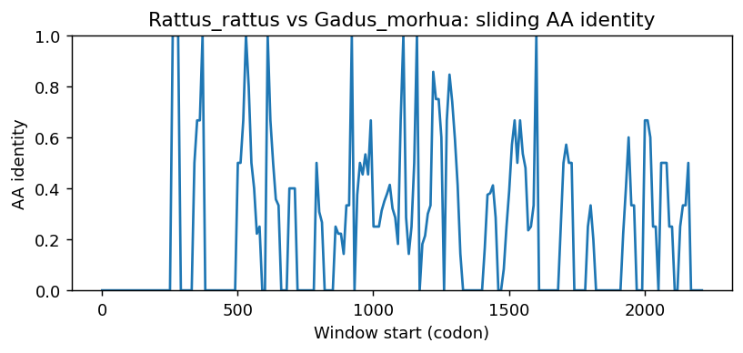

Ortholog Divergence Report
Input: TNIP2.valid.longest.fa · N sequences: 592 · Aligned length: 2211 codons
Reference: Rattus_rattus
Quick risk overview
- LOW: 0
- INTERMEDIATE: 0
- HIGH: 174936


Composition & complexity per sequence
Saved as per_sequence_composition.csv. High low-complexity or repeat content can reduce BLAST sensitivity due to soft masking.
| id | GC | GC skew | CpG dens. | AA LCR frac | NT repeat frac | AA len | CDS len |
|---|---|---|---|---|---|---|---|
| Rattus_rattus | 0.55814 | 0.15 | 0.04189 | 0.05814 | 0.76589 | 430 | 1290 |
| Vicugna_pacos | 0.65291 | 0.1452 | 0.08034 | 0.09862 | 0.74618 | 436 | 1308 |
| Platichthys_flesus | 0.60191 | 0.1198 | 0.06627 | 0.05519 | 0.81678 | 453 | 1359 |
| Pezoporus_occidentalis | 0.51702 | 0.10311 | 0.03728 | 0.08863 | 0.72126 | 519 | 1557 |
| Pezoporus_wallicus | 0.5158 | 0.105 | 0.03677 | 0.10638 | 0.71373 | 517 | 1551 |
| Physeter_macrocephalus | 0.67907 | 0.13699 | 0.09232 | 0.15581 | 0.75349 | 430 | 1290 |
| Hypanus_sabinus | 0.60618 | 0.12639 | 0.06389 | 0.02823 | 0.76075 | 496 | 1488 |
| Saccopteryx_leptura | 0.66902 | 0.12309 | 0.0832 | 0.16941 | 0.77333 | 425 | 1275 |
| Budorcas_taxicolor | 0.6993 | 0.16 | 0.09953 | 0.13986 | 0.75835 | 429 | 1287 |
| Oreochromis_aureus | 0.52916 | 0.14286 | 0.03314 | 0.06048 | 0.78258 | 463 | 1389 |
| Nomascus_leucogenys | 0.63092 | 0.10099 | 0.07076 | 0.09557 | 0.7397 | 429 | 1287 |
| Thalassophryne_amazonica | 0.56344 | 0.14249 | 0.06528 | 0.06452 | 0.77061 | 465 | 1395 |
| Gymnodraco_acuticeps | 0.55286 | 0.13147 | 0.04555 | 0.06828 | 0.79442 | 454 | 1362 |
| Xenopus_tropicalis | 0.52842 | 0.06773 | 0.03792 | 0.05053 | 0.74456 | 475 | 1425 |
| Muntiacus_reevesi | 0.70319 | 0.14254 | 0.10653 | 0.09324 | 0.72572 | 429 | 1287 |
| Hoplias_malabaricus | 0.52273 | 0.11014 | 0.03563 | 0.03409 | 0.79697 | 440 | 1320 |
| Seriola_lalandi_dorsalis | 0.50838 | 0.17414 | 0.0255 | 0.1006 | 0.75386 | 497 | 1491 |
| Danio_aesculapii | 0.48214 | 0.12346 | 0.03649 | 0.02679 | 0.6622 | 448 | 1344 |
| Ceratotherium_simum_simum | 0.62937 | 0.1358 | 0.0661 | 0.12121 | 0.75991 | 429 | 1287 |
| Gracilinanus_agilis | 0.51458 | 0.18719 | 0.03553 | 0.06844 | 0.75032 | 263 | 789 |
| Cercocebus_atys | 0.62782 | 0.11139 | 0.06299 | 0.09557 | 0.75136 | 429 | 1287 |
| Toxotes_jaculatrix | 0.50605 | 0.16866 | 0.02824 | 0.04234 | 0.78226 | 496 | 1488 |
| Heptranchias_perlo | 0.62293 | 0.14043 | 0.07162 | 0.02783 | 0.77137 | 503 | 1509 |
| Trichomycterus_rosablanca | 0.51121 | 0.12859 | 0.03638 | 0.02784 | 0.7703 | 431 | 1293 |
| Apodemus_sylvaticus | 0.55504 | 0.15084 | 0.03957 | 0.08605 | 0.76357 | 430 | 1290 |
| Ochotona_curzoniae | 0.6963 | 0.09456 | 0.08237 | 0.06667 | 0.72263 | 405 | 1215 |
| Dunckerocampus_dactyliophorus | 0.63047 | 0.05981 | 0.07547 | 0.08597 | 0.773 | 442 | 1326 |
| Dipodomys_spectabilis | 0.70613 | 0.10345 | 0.09244 | 0.27204 | 0.72544 | 397 | 1191 |
| Falco_rusticolus | 0.50097 | 0.11025 | 0.03381 | 0.08772 | 0.74919 | 513 | 1539 |
| Echinops_telfairi | 0.67571 | 0.10702 | 0.05317 | 0.15932 | 0.72316 | 295 | 885 |
| Cheilinus_undulatus | 0.52674 | 0.15994 | 0.03959 | 0.08791 | 0.7685 | 455 | 1365 |
| Cinclus_cinclus | 0.52202 | 0.10831 | 0.04145 | 0.05917 | 0.77186 | 507 | 1521 |
| Larimichthys_crocea | 0.51468 | 0.16976 | 0.03894 | 0.10573 | 0.78194 | 454 | 1362 |
| Geotrypetes_seraphini | 0.51928 | 0.1618 | 0.03859 | 0.0 | 0.73347 | 484 | 1452 |
| Takifugu_rubripes | 0.559 | 0.16095 | 0.06052 | 0.09071 | 0.78909 | 452 | 1356 |
| Camelus_bactrianus | 0.64235 | 0.11987 | 0.06795 | 0.1155 | 0.69504 | 329 | 987 |
| Eleginops_maclovinus | 0.51747 | 0.18425 | 0.0284 | 0.08515 | 0.78967 | 458 | 1374 |
| Phasianus_colchicus | 0.52795 | 0.09949 | 0.04111 | 0.12525 | 0.73872 | 495 | 1485 |
| Peromyscus_maniculatus_bairdii | 0.5669 | 0.13506 | 0.04489 | 0.08585 | 0.75947 | 431 | 1293 |
| Sebastes_umbrosus | 0.5504 | 0.1738 | 0.04271 | 0.07506 | 0.82929 | 453 | 1359 |
| Camarhynchus_parvulus | 0.51984 | 0.11196 | 0.0364 | 0.08333 | 0.75397 | 504 | 1512 |
| Rana_temporaria | 0.51977 | 0.07609 | 0.0311 | 0.0 | 0.76059 | 472 | 1416 |
| Electrophorus_electricus | 0.58741 | 0.12169 | 0.05599 | 0.02797 | 0.79876 | 429 | 1287 |
| Puma_yagouaroundi | 0.64688 | 0.16706 | 0.07464 | 0.13242 | 0.78158 | 438 | 1314 |
| Amblyraja_radiata | 0.63023 | 0.15418 | 0.06415 | 0.1417 | 0.75439 | 494 | 1482 |
| Macaca_fascicularis | 0.61752 | 0.08651 | 0.06058 | 0.08761 | 0.75142 | 468 | 1404 |
| Conger_conger | 0.50358 | 0.18483 | 0.02548 | 0.05967 | 0.76452 | 419 | 1257 |
| Poecilia_latipinna | 0.60658 | 0.10613 | 0.06013 | 0.1309 | 0.78898 | 466 | 1398 |
| Talpa_occidentalis | 0.62417 | 0.11649 | 0.06427 | 0.03966 | 0.75921 | 353 | 1059 |
| Lampris_incognitus | 0.57783 | 0.15129 | 0.0505 | 0.1258 | 0.77754 | 469 | 1407 |
| Rissa_tridactyla | 0.51003 | 0.09645 | 0.03886 | 0.09903 | 0.76181 | 515 | 1545 |
| Ictalurus_furcatus | 0.55919 | 0.13092 | 0.06313 | 0.03037 | 0.76402 | 428 | 1284 |
| Narcine_bancroftii | 0.60454 | 0.15801 | 0.05548 | 0.0521 | 0.78424 | 499 | 1497 |
| Aquila_chrysaetos_chrysaetos | 0.5045 | 0.1148 | 0.04121 | 0.11197 | 0.74453 | 518 | 1554 |
| Pongo_abelii | 0.62782 | 0.09406 | 0.06921 | 0.09091 | 0.75291 | 429 | 1287 |
| Epinephelus_fuscoguttatus | 0.55215 | 0.17305 | 0.03942 | 0.06783 | 0.81765 | 457 | 1371 |
| Capricornis_sumatraensis | 0.70843 | 0.16574 | 0.10252 | 0.13948 | 0.74468 | 423 | 1269 |
| Archocentrus_centrarchus | 0.51868 | 0.11527 | 0.03141 | 0.07175 | 0.77803 | 446 | 1338 |
| Balaenoptera_ricei | 0.70537 | 0.1469 | 0.09869 | 0.25655 | 0.68727 | 534 | 1602 |
| Nerophis_lumbriciformis | 0.62111 | 0.08313 | 0.07979 | 0.02733 | 0.76158 | 439 | 1317 |
| Delphinapterus_leucas | 0.68894 | 0.12152 | 0.09685 | 0.1106 | 0.71429 | 434 | 1302 |
| Pteropus_giganteus | 0.69396 | 0.08787 | 0.09529 | 0.1899 | 0.71254 | 574 | 1722 |
| Cervus_elaphus | 0.70552 | 0.13877 | 0.10731 | 0.14918 | 0.7366 | 429 | 1287 |
| Ovis_aries | 0.70396 | 0.16336 | 0.10187 | 0.14219 | 0.75136 | 429 | 1287 |
| Molossus_molossus | 0.70317 | 0.11738 | 0.09134 | 0.17381 | 0.74286 | 420 | 1260 |
| Phocoena_sinus | 0.67819 | 0.12571 | 0.09531 | 0.19816 | 0.73886 | 434 | 1302 |
| Corvus_moneduloides | 0.51282 | 0.12564 | 0.03882 | 0.09073 | 0.77252 | 507 | 1521 |
| Etheostoma_spectabile | 0.55507 | 0.14849 | 0.05036 | 0.10503 | 0.78556 | 457 | 1371 |
| Ictalurus_punctatus | 0.5553 | 0.13324 | 0.0608 | 0.03037 | 0.76869 | 428 | 1284 |
| Lethenteron_reissneri | 0.67321 | 0.19449 | 0.0988 | 0.31588 | 0.78069 | 611 | 1833 |
| Tachysurus_vachellii | 0.51834 | 0.13208 | 0.04405 | 0.0 | 0.76528 | 409 | 1227 |
| Chrysemys_picta_bellii | 0.47297 | 0.14286 | 0.02254 | 0.0888 | 0.77413 | 518 | 1554 |
| Falco_cherrug | 0.50097 | 0.11025 | 0.03381 | 0.08772 | 0.74919 | 513 | 1539 |
| Vulpes_vulpes | 0.64215 | 0.14797 | 0.06595 | 0.14023 | 0.76705 | 435 | 1305 |
| Harpia_harpyja | 0.50064 | 0.11825 | 0.03863 | 0.11197 | 0.74324 | 518 | 1554 |
| Panthera_tigris | 0.64755 | 0.15939 | 0.07575 | 0.12844 | 0.78593 | 436 | 1308 |
| Propithecus_coquereli | 0.61728 | 0.1275 | 0.05637 | 0.16667 | 0.75154 | 432 | 1296 |
| Carassius_auratus | 0.51185 | 0.10564 | 0.04374 | 0.02667 | 0.68222 | 450 | 1350 |
| Equus_caballus | 0.64491 | 0.12289 | 0.07698 | 0.1655 | 0.75447 | 429 | 1287 |
| Caloenas_nicobarica | 0.50863 | 0.10176 | 0.04006 | 0.07246 | 0.77226 | 483 | 1449 |
| Cervus_canadensis | 0.70629 | 0.13971 | 0.10809 | 0.12121 | 0.7366 | 429 | 1287 |
| Zonotrichia_albicollis | 0.52712 | 0.12171 | 0.04103 | 0.08532 | 0.75397 | 504 | 1512 |
| Neopsephotus_bourkii | 0.52224 | 0.1037 | 0.04194 | 0.08897 | 0.73501 | 517 | 1551 |
| Mauremys_mutica | 0.47527 | 0.15135 | 0.02378 | 0.07129 | 0.78292 | 519 | 1557 |
| Mastomys_coucha | 0.55426 | 0.12168 | 0.04034 | 0.05814 | 0.76667 | 430 | 1290 |
| Antennarius_striatus | 0.57531 | 0.14909 | 0.06281 | 0.08368 | 0.7636 | 478 | 1434 |
| Epinephelus_lanceolatus | 0.55409 | 0.16623 | 0.04023 | 0.04167 | 0.8136 | 456 | 1368 |
| Bombina_bombina | 0.4548 | 0.09627 | 0.02898 | 0.05085 | 0.69562 | 472 | 1416 |
| Alosa_alosa | 0.54762 | 0.14097 | 0.04477 | 0.04113 | 0.76768 | 462 | 1386 |
| Peromyscus_californicus_insignis | 0.56922 | 0.13043 | 0.04721 | 0.08585 | 0.74246 | 431 | 1293 |
| Denticeps_clupeoides | 0.5696 | 0.18098 | 0.05271 | 0.09481 | 0.72611 | 443 | 1329 |
| Ictidomys_tridecemlineatus | 0.60566 | 0.11511 | 0.04215 | 0.03268 | 0.76035 | 459 | 1377 |
| Osmerus_eperlanus | 0.52491 | 0.15775 | 0.03862 | 0.05263 | 0.75298 | 475 | 1425 |
| Rhincodon_typus | 0.5648 | 0.08957 | 0.04369 | 0.03534 | 0.75814 | 481 | 1443 |
| Chroicocephalus_ridibundus | 0.51133 | 0.0962 | 0.04016 | 0.09903 | 0.76181 | 515 | 1545 |
| Colossoma_macropomum | 0.5302 | 0.09142 | 0.04104 | 0.02685 | 0.75839 | 447 | 1341 |
| Dama_dama | 0.70474 | 0.14664 | 0.10886 | 0.14918 | 0.72883 | 429 | 1287 |
| Nematolebias_whitei | 0.56914 | 0.16113 | 0.05244 | 0.10917 | 0.76346 | 458 | 1374 |
| Corvus_hawaiiensis | 0.51414 | 0.12788 | 0.04013 | 0.09073 | 0.76068 | 507 | 1521 |
| Aythya_fuligula | 0.52625 | 0.07232 | 0.04268 | 0.07677 | 0.74278 | 508 | 1524 |
| Micropterus_dolomieu | 0.52624 | 0.17416 | 0.03254 | 0.0643 | 0.75831 | 451 | 1353 |
| Molothrus_aeneus | 0.52513 | 0.10579 | 0.04169 | 0.08532 | 0.75926 | 504 | 1512 |
| Phocoena_phocoena | 0.68437 | 0.12936 | 0.09091 | 0.22633 | 0.72517 | 433 | 1299 |
| Alligator_mississippiensis | 0.52352 | 0.1733 | 0.04438 | 0.17742 | 0.78629 | 496 | 1488 |
| Caretta_caretta | 0.48254 | 0.15 | 0.02859 | 0.05905 | 0.74095 | 525 | 1575 |
| Gallus_gallus | 0.52207 | 0.10294 | 0.03841 | 0.09405 | 0.75368 | 521 | 1563 |
| Prinia_subflava | 0.53399 | 0.12732 | 0.04227 | 0.07921 | 0.77492 | 505 | 1515 |
| Thunnus_albacares | 0.51974 | 0.20113 | 0.03146 | 0.05702 | 0.78216 | 456 | 1368 |
| Capra_hircus | 0.70474 | 0.15766 | 0.1042 | 0.10956 | 0.74437 | 429 | 1287 |
| Corapipo_altera | 0.51779 | 0.09669 | 0.04087 | 0.08696 | 0.7556 | 506 | 1518 |
| Carassius_gibelio | 0.51259 | 0.10116 | 0.04522 | 0.02667 | 0.67556 | 450 | 1350 |
| Phalacrocorax_carbo | 0.50319 | 0.09898 | 0.03706 | 0.09195 | 0.74266 | 522 | 1566 |
| Opisthocomus_hoazin | 0.48271 | 0.08023 | 0.03391 | 0.0 | 0.75657 | 482 | 1446 |
| Dryobates_pubescens | 0.5144 | 0.10448 | 0.03457 | 0.08445 | 0.77159 | 521 | 1563 |
| Pristis_pectinata | 0.59485 | 0.15034 | 0.05695 | 0.05285 | 0.77846 | 492 | 1476 |
| Limanda_limanda | 0.61488 | 0.10795 | 0.06715 | 0.05908 | 0.77024 | 457 | 1371 |
| Haemorhous_mexicanus | 0.51889 | 0.12644 | 0.04111 | 0.10934 | 0.7727 | 503 | 1509 |
| Malaclemys_terrapin_pileata | 0.47362 | 0.14674 | 0.02254 | 0.0888 | 0.76126 | 518 | 1554 |
| Chelonia_mydas | 0.48063 | 0.13606 | 0.02732 | 0.05905 | 0.74286 | 525 | 1575 |
| Sander_lucioperca | 0.55604 | 0.14174 | 0.05282 | 0.10629 | 0.77874 | 461 | 1383 |
| Oryx_dammah | 0.70707 | 0.15824 | 0.10498 | 0.14918 | 0.72727 | 429 | 1287 |
| Anoplopoma_fimbria | 0.56944 | 0.1656 | 0.05048 | 0.13377 | 0.82602 | 456 | 1368 |
| Theropithecus_gelada | 0.63569 | 0.12761 | 0.06568 | 0.09071 | 0.74115 | 452 | 1356 |
| Piliocolobus_tephrosceles | 0.58799 | 0.12324 | 0.04249 | 0.0 | 0.79296 | 322 | 966 |
| Motacilla_alba_alba | 0.52286 | 0.10773 | 0.04244 | 0.05567 | 0.778 | 503 | 1509 |
| Poecilia_reticulata | 0.60944 | 0.10798 | 0.06299 | 0.13948 | 0.77682 | 466 | 1398 |
| Cyprinodon_tularosa | 0.55694 | 0.11471 | 0.04031 | 0.12292 | 0.74861 | 480 | 1440 |
| Panthera_pardus | 0.64832 | 0.16038 | 0.07575 | 0.12844 | 0.78746 | 436 | 1308 |
| Chelonoidis_abingdonii | 0.46757 | 0.13736 | 0.02057 | 0.07322 | 0.77649 | 519 | 1557 |
| Sturnira_hondurensis | 0.69365 | 0.13501 | 0.08419 | 0.12143 | 0.69524 | 420 | 1260 |
| Lepus_europaeus | 0.69827 | 0.06897 | 0.09639 | 0.20542 | 0.73965 | 443 | 1329 |
| Nanorana_parkeri | 0.51599 | 0.06887 | 0.03058 | 0.0 | 0.74129 | 469 | 1407 |
| Scophthalmus_maximus | 0.63019 | 0.14869 | 0.08232 | 0.15236 | 0.78469 | 466 | 1398 |
| Xiphias_gladius | 0.54725 | 0.18072 | 0.04765 | 0.09451 | 0.73407 | 455 | 1365 |
| Catharus_ustulatus | 0.52211 | 0.12769 | 0.04029 | 0.09307 | 0.76436 | 505 | 1515 |
| Erinaceus_europaeus | 0.68455 | 0.13302 | 0.09113 | 0.16829 | 0.75366 | 410 | 1230 |
| Myodes_glareolus | 0.5772 | 0.13855 | 0.05309 | 0.05938 | 0.7593 | 421 | 1263 |
| Mustela_erminea | 0.65977 | 0.16144 | 0.07899 | 0.09655 | 0.79847 | 435 | 1305 |
| Myotis_lucifugus | 0.69512 | 0.15205 | 0.07332 | 0.14634 | 0.73577 | 164 | 492 |
| Tyto_alba | 0.50519 | 0.11938 | 0.03764 | 0.06226 | 0.72309 | 514 | 1542 |
| Sparus_aurata | 0.54367 | 0.17537 | 0.04297 | 0.09389 | 0.82678 | 458 | 1374 |
| Vidua_chalybeata | 0.52005 | 0.11504 | 0.04211 | 0.08087 | 0.78107 | 507 | 1521 |
| Puntigrus_tetrazona | 0.52135 | 0.09483 | 0.05322 | 0.05393 | 0.67715 | 445 | 1335 |
| Bufo_bufo | 0.45698 | 0.06962 | 0.0246 | 0.0 | 0.73319 | 461 | 1383 |
| Girardinichthys_multiradiatus | 0.55458 | 0.13871 | 0.03739 | 0.1033 | 0.7641 | 455 | 1365 |
| Phyllopteryx_taeniolatus | 0.62749 | 0.053 | 0.08728 | 0.08647 | 0.78862 | 451 | 1353 |
| Sinocyclocheilus_anshuiensis | 0.51305 | 0.10756 | 0.04552 | 0.02685 | 0.6786 | 447 | 1341 |
| Pseudopodoces_humilis | 0.51303 | 0.09626 | 0.035 | 0.02881 | 0.77435 | 486 | 1458 |
| Brienomyrus_brachyistius | 0.57788 | 0.09896 | 0.06401 | 0.02709 | 0.78179 | 443 | 1329 |
| Melospiza_melodia_melodia | 0.52579 | 0.11698 | 0.04037 | 0.08532 | 0.75198 | 504 | 1512 |
| Myotis_daubentonii | 0.71349 | 0.15239 | 0.09134 | 0.20714 | 0.75635 | 420 | 1260 |
| Oenanthe_melanoleuca | 0.52075 | 0.12339 | 0.04086 | 0.07831 | 0.76439 | 498 | 1494 |
| Syngnathus_scovelli | 0.60181 | 0.0802 | 0.07925 | 0.13122 | 0.76546 | 442 | 1326 |
| Amphiprion_ocellaris | 0.57595 | 0.15513 | 0.05158 | 0.11546 | 0.85979 | 485 | 1455 |
| Agelaius_phoeniceus | 0.52587 | 0.10834 | 0.0426 | 0.08448 | 0.75311 | 509 | 1527 |
| Lates_calcarifer | 0.51608 | 0.19547 | 0.03146 | 0.11623 | 0.73611 | 456 | 1368 |
| Falco_biarmicus | 0.50162 | 0.10881 | 0.03446 | 0.08772 | 0.75374 | 513 | 1539 |
| Melopsittacus_undulatus | 0.52353 | 0.10099 | 0.04129 | 0.08511 | 0.72147 | 517 | 1551 |
| Orcinus_orca | 0.70356 | 0.14133 | 0.10138 | 0.20826 | 0.6848 | 533 | 1599 |
| Pseudophryne_corroboree | 0.51144 | 0.08252 | 0.02935 | 0.05365 | 0.80258 | 466 | 1398 |
| Neopelma_chrysocephalum | 0.51515 | 0.0844 | 0.04219 | 0.06126 | 0.74835 | 506 | 1518 |
| Bison_bison_bison | 0.6534 | 0.14721 | 0.06811 | 0.0 | 0.77944 | 201 | 603 |
| Meriones_unguiculatus | 0.55426 | 0.14685 | 0.0512 | 0.08605 | 0.76822 | 430 | 1290 |
| Melanotaenia_boesemani | 0.50693 | 0.16547 | 0.02993 | 0.08096 | 0.76003 | 457 | 1371 |
| Chiloscyllium_plagiosum | 0.56405 | 0.09402 | 0.0379 | 0.06198 | 0.74656 | 484 | 1452 |
| Solea_senegalensis | 0.54121 | 0.16981 | 0.04015 | 0.15536 | 0.80379 | 457 | 1371 |
| Mustela_putorius_furo | 0.659 | 0.16512 | 0.07899 | 0.08736 | 0.76782 | 435 | 1305 |
| Paramisgurnus_dabryanus | 0.49256 | 0.11782 | 0.04765 | 0.0 | 0.69122 | 448 | 1344 |
| Tursiops_truncatus | 0.68786 | 0.08743 | 0.08825 | 0.19072 | 0.69416 | 582 | 1746 |
| Lemur_catta | 0.62963 | 0.125 | 0.06718 | 0.19213 | 0.75772 | 432 | 1296 |
| Cygnus_olor | 0.521 | 0.0932 | 0.04137 | 0.05315 | 0.74213 | 508 | 1524 |
| Callorhinus_ursinus | 0.66358 | 0.15581 | 0.0834 | 0.14583 | 0.76157 | 432 | 1296 |
| Hyaena_hyaena | 0.67126 | 0.14384 | 0.08972 | 0.13333 | 0.79004 | 435 | 1305 |
| Macaca_mulatta | 0.61752 | 0.08651 | 0.06058 | 0.08761 | 0.75142 | 468 | 1404 |
| Pipra_filicauda | 0.52174 | 0.09091 | 0.04417 | 0.08696 | 0.76087 | 506 | 1518 |
| Myotis_yumanensis | 0.71349 | 0.15239 | 0.09452 | 0.19762 | 0.75714 | 420 | 1260 |
| Xiphophorus_maculatus | 0.62366 | 0.11724 | 0.07174 | 0.10538 | 0.76272 | 465 | 1395 |
| Emys_orbicularis | 0.46782 | 0.14443 | 0.01996 | 0.07529 | 0.76319 | 518 | 1554 |
| Grus_americana | 0.50544 | 0.10363 | 0.04221 | 0.12245 | 0.72721 | 490 | 1470 |
| Mus_pahari | 0.55969 | 0.13019 | 0.045 | 0.03023 | 0.75426 | 430 | 1290 |
| Mustela_nigripes | 0.65977 | 0.16609 | 0.08052 | 0.11034 | 0.77088 | 435 | 1305 |
| Syngnathoides_biaculeatus | 0.64039 | 0.05275 | 0.09767 | 0.09009 | 0.77327 | 444 | 1332 |
| Xiphophorus_hellerii | 0.62275 | 0.11445 | 0.07205 | 0.11447 | 0.76962 | 463 | 1389 |
| Gopherus_evgoodei | 0.46885 | 0.12877 | 0.01992 | 0.04817 | 0.77136 | 519 | 1557 |
| Stegastes_partitus | 0.55534 | 0.14716 | 0.0425 | 0.1583 | 0.80952 | 518 | 1554 |
| Empidonax_traillii | 0.52833 | 0.08978 | 0.04153 | 0.08696 | 0.74638 | 506 | 1518 |
| Oxyura_jamaicensis | 0.51706 | 0.08629 | 0.04137 | 0.07874 | 0.71457 | 508 | 1524 |
| Camelus_dromedarius | 0.66514 | 0.13103 | 0.08646 | 0.09174 | 0.74159 | 436 | 1308 |
| Mirounga_leonina | 0.66898 | 0.14879 | 0.08726 | 0.15972 | 0.78241 | 432 | 1296 |
| Cyprinus_carpio | 0.50932 | 0.10688 | 0.04328 | 0.02685 | 0.69128 | 447 | 1341 |
| Scatophagus_argus | 0.52125 | 0.1731 | 0.03507 | 0.09396 | 0.77927 | 447 | 1341 |
| Bufo_gargarizans | 0.4632 | 0.081 | 0.02383 | 0.04113 | 0.73088 | 462 | 1386 |
| Trematomus_bernacchii | 0.55678 | 0.12895 | 0.04179 | 0.07033 | 0.79121 | 455 | 1365 |
| Saccopteryx_bilineata | 0.66129 | 0.05691 | 0.07917 | 0.19355 | 0.76267 | 434 | 1302 |
| Pipistrellus_kuhlii | 0.75758 | 0.13641 | 0.11975 | 0.31702 | 0.73193 | 429 | 1287 |
| Ursus_maritimus | 0.6682 | 0.13761 | 0.08359 | 0.11264 | 0.77395 | 435 | 1305 |
| Canis_lupus_familiaris | 0.64992 | 0.15925 | 0.07007 | 0.15068 | 0.75266 | 438 | 1314 |
| Pseudorasbora_parva | 0.50634 | 0.11046 | 0.04328 | 0.02908 | 0.66816 | 447 | 1341 |
| Perognathus_longimembris_pacificus | 0.76534 | 0.13759 | 0.12863 | 0.3408 | 0.70398 | 402 | 1206 |
| Myotis_davidii | 0.68744 | 0.14835 | 0.07656 | 0.2068 | 0.69405 | 353 | 1059 |
| Nipponia_nippon | 0.47537 | 0.0961 | 0.03286 | 0.05782 | 0.73876 | 467 | 1401 |
| Marmota_monax | 0.61827 | 0.14141 | 0.05312 | 0.09368 | 0.78845 | 427 | 1281 |
| Dicentrarchus_labrax | 0.53813 | 0.16869 | 0.0436 | 0.0305 | 0.79593 | 459 | 1377 |
| Choloepus_didactylus | 0.7185 | 0.15205 | 0.09338 | 0.15072 | 0.73604 | 418 | 1254 |
| Syngnathus_acus | 0.60332 | 0.09 | 0.07925 | 0.09729 | 0.78658 | 442 | 1326 |
| Astyanax_mexicanus | 0.57353 | 0.0406 | 0.04966 | 0.12684 | 0.73346 | 544 | 1632 |
| Corvus_brachyrhynchos | 0.45088 | 0.11673 | 0.02019 | 0.05 | 0.76053 | 380 | 1140 |
| Megalobrama_amblycephala | 0.50075 | 0.10448 | 0.04263 | 0.0 | 0.6861 | 446 | 1338 |
| Lynx_rufus | 0.64679 | 0.16785 | 0.07422 | 0.13303 | 0.77217 | 436 | 1308 |
| Apus_apus | 0.52154 | 0.11563 | 0.04443 | 0.09543 | 0.73426 | 503 | 1509 |
| Chanodichthys_erythropterus | 0.49851 | 0.10945 | 0.04114 | 0.0 | 0.68087 | 446 | 1338 |
| Seriola_aureovittata | 0.50838 | 0.17414 | 0.0255 | 0.1006 | 0.75386 | 497 | 1491 |
| Centropristis_striata | 0.52783 | 0.13033 | 0.0363 | 0.0863 | 0.74672 | 533 | 1599 |
| Bos_mutus | 0.70241 | 0.15044 | 0.10187 | 0.13986 | 0.73271 | 429 | 1287 |
| Syngnathus_typhle | 0.60794 | 0.08616 | 0.08102 | 0.14048 | 0.7619 | 420 | 1260 |
| Danio_rerio | 0.48661 | 0.13761 | 0.03574 | 0.02679 | 0.67262 | 448 | 1344 |
| Melozone_crissalis | 0.52447 | 0.1198 | 0.04103 | 0.08135 | 0.75 | 504 | 1512 |
| Prionailurus_bengalensis | 0.64602 | 0.16686 | 0.07422 | 0.13303 | 0.78135 | 436 | 1308 |
| Sinocyclocheilus_rhinocerous | 0.5041 | 0.09763 | 0.03955 | 0.06264 | 0.66965 | 447 | 1341 |
| Sapajus_apella | 0.64646 | 0.11298 | 0.07776 | 0.12587 | 0.76457 | 429 | 1287 |
| Semicossyphus_pulcher | 0.51254 | 0.19137 | 0.031 | 0.06416 | 0.80531 | 452 | 1356 |
| Ranitomeya_imitator | 0.45514 | 0.05128 | 0.02701 | 0.0 | 0.75201 | 457 | 1371 |
| Pongo_pygmaeus | 0.62937 | 0.0963 | 0.06998 | 0.09091 | 0.74825 | 429 | 1287 |
| Oncorhynchus_gorbuscha | 0.52677 | 0.15629 | 0.0355 | 0.1004 | 0.73494 | 498 | 1494 |
| Hippocampus_zosterae | 0.60976 | 0.04242 | 0.08284 | 0.13969 | 0.75166 | 451 | 1353 |
| Lagenorhynchus_obliquidens | 0.68402 | 0.10359 | 0.09045 | 0.21258 | 0.72162 | 461 | 1383 |
| Gadus_macrocephalus | 0.5792 | 0.07015 | 0.05376 | 0.16736 | 0.80441 | 484 | 1452 |
| Nothobranchius_furzeri | 0.5426 | 0.15702 | 0.04338 | 0.10538 | 0.76981 | 446 | 1338 |
| Onychostoma_macrolepis | 0.51305 | 0.09884 | 0.04403 | 0.02685 | 0.66667 | 447 | 1341 |
| Rhinopithecus_roxellana | 0.6251 | 0.11084 | 0.06317 | 0.08776 | 0.75751 | 433 | 1299 |
| Hippoglossus_hippoglossus | 0.5837 | 0.13452 | 0.05634 | 0.08667 | 0.79778 | 450 | 1350 |
| Alligator_sinensis | 0.43774 | 0.14661 | 0.01534 | 0.05747 | 0.79023 | 348 | 1044 |
| Trichechus_manatus_latirostris | 0.68047 | 0.11076 | 0.06057 | 0.04459 | 0.73142 | 314 | 942 |
| Panthera_leo | 0.64755 | 0.16175 | 0.07575 | 0.12844 | 0.77676 | 436 | 1308 |
| Microtus_ochrogaster | 0.58333 | 0.12938 | 0.05507 | 0.05896 | 0.76179 | 424 | 1272 |
| Pygoscelis_adeliae | 0.42576 | 0.09469 | 0.01772 | 0.0 | 0.75221 | 339 | 1017 |
| Cyclopterus_lumpus | 0.5734 | 0.14056 | 0.0674 | 0.12953 | 0.8152 | 579 | 1737 |
| Pelodiscus_sinensis | 0.46276 | 0.08971 | 0.02505 | 0.02381 | 0.74542 | 546 | 1638 |
| Nerophis_ophidion | 0.62339 | 0.07917 | 0.07751 | 0.06378 | 0.76462 | 439 | 1317 |
| Bos_javanicus | 0.70241 | 0.15708 | 0.10109 | 0.13986 | 0.73582 | 429 | 1287 |
| Camelus_ferus | 0.66742 | 0.12118 | 0.08775 | 0.14966 | 0.7226 | 441 | 1323 |
| Myotis_brandtii | 0.67509 | 0.10957 | 0.0731 | 0.18539 | 0.7603 | 356 | 1068 |
| Periophthalmus_magnuspinnatus | 0.58537 | 0.14141 | 0.05251 | 0.11308 | 0.82779 | 451 | 1353 |
| Rhea_pennata | 0.49805 | 0.09804 | 0.03779 | 0.14453 | 0.7181 | 512 | 1536 |
| Hypomesus_transpacificus | 0.51719 | 0.16961 | 0.03511 | 0.05474 | 0.75018 | 475 | 1425 |
| Gouania_willdenowi | 0.55084 | 0.12958 | 0.0438 | 0.16566 | 0.83232 | 495 | 1485 |
| Doryrhamphus_excisus | 0.65109 | 0.08612 | 0.0873 | 0.07009 | 0.79829 | 428 | 1284 |
| Neomonachus_schauinslandi | 0.66821 | 0.14747 | 0.08552 | 0.15935 | 0.77444 | 433 | 1299 |
| Megalops_cyprinoides | 0.59251 | 0.12515 | 0.07205 | 0.07775 | 0.79914 | 463 | 1389 |
| Enhydra_lutris_kenyoni | 0.65824 | 0.14086 | 0.07669 | 0.11264 | 0.78238 | 435 | 1305 |
| Corythoichthys_intestinalis | 0.61091 | 0.09903 | 0.12945 | 0.10676 | 0.76631 | 281 | 843 |
| Equus_asinus | 0.67346 | 0.11641 | 0.08956 | 0.1963 | 0.70494 | 540 | 1620 |
| Arvicanthis_niloticus | 0.55426 | 0.12727 | 0.03957 | 0.08605 | 0.77442 | 430 | 1290 |
| Anarrhichthys_ocellatus | 0.53379 | 0.16643 | 0.04483 | 0.06834 | 0.79271 | 439 | 1317 |
| Apteryx_mantelli | 0.48508 | 0.09091 | 0.03569 | 0.14008 | 0.68029 | 514 | 1542 |
| Meles_meles | 0.65977 | 0.15447 | 0.08129 | 0.09655 | 0.77165 | 435 | 1305 |
| Myiozetetes_cayanensis | 0.52767 | 0.09613 | 0.04153 | 0.12055 | 0.77009 | 506 | 1518 |
| Leucoraja_erinaceus | 0.63428 | 0.15745 | 0.06617 | 0.1417 | 0.76653 | 494 | 1482 |
| Elephantulus_edwardii | 0.66963 | 0.10841 | 0.0556 | 0.12889 | 0.70593 | 450 | 1350 |
| Ovis_canadensis | 0.70474 | 0.16207 | 0.10187 | 0.13753 | 0.75136 | 429 | 1287 |
| Moschus_berezovskii | 0.71439 | 0.1408 | 0.10654 | 0.13216 | 0.73421 | 454 | 1362 |
| Melospiza_georgiana | 0.52315 | 0.12516 | 0.03905 | 0.08532 | 0.76058 | 504 | 1512 |
| Geospiza_fortis | 0.45329 | 0.09328 | 0.01673 | 0.0 | 0.72861 | 339 | 1017 |
| Hyla_sarda | 0.47599 | 0.05723 | 0.03085 | 0.03441 | 0.75986 | 465 | 1395 |
| Neoarius_graeffei | 0.55062 | 0.15134 | 0.0569 | 0.0 | 0.76012 | 428 | 1284 |
| Octodon_degus | 0.69225 | 0.09007 | 0.0776 | 0.05755 | 0.7442 | 417 | 1251 |
| Cynocephalus_volans | 0.6155 | 0.15113 | 0.06362 | 0.1093 | 0.74729 | 430 | 1290 |
| Chelmon_rostratus | 0.54221 | 0.17047 | 0.04151 | 0.16376 | 0.79985 | 458 | 1374 |
| Pan_troglodytes | 0.62937 | 0.10123 | 0.06998 | 0.12354 | 0.74825 | 429 | 1287 |
| Callithrix_jacchus | 0.63326 | 0.11166 | 0.0661 | 0.12587 | 0.76457 | 429 | 1287 |
| Kryptolebias_marmoratus | 0.60229 | 0.14014 | 0.05941 | 0.10086 | 0.78112 | 466 | 1398 |
| Otolemur_garnettii | 0.62061 | 0.15472 | 0.05937 | 0.13115 | 0.76269 | 427 | 1281 |
| Polypterus_senegalus | 0.62753 | 0.06682 | 0.08112 | 0.03354 | 0.78546 | 477 | 1431 |
| Pygocentrus_nattereri | 0.5138 | 0.07692 | 0.03582 | 0.0 | 0.75764 | 447 | 1341 |
| Zalophus_californianus | 0.66898 | 0.1534 | 0.08571 | 0.17824 | 0.74537 | 432 | 1296 |
| Neogale_vison | 0.66207 | 0.15278 | 0.07975 | 0.11264 | 0.76858 | 435 | 1305 |
| Phacochoerus_africanus | 0.67893 | 0.12415 | 0.09509 | 0.16322 | 0.78008 | 435 | 1305 |
| Halichoerus_grypus | 0.67901 | 0.15 | 0.09266 | 0.17593 | 0.77392 | 432 | 1296 |
| Hylobates_moloch | 0.6317 | 0.10209 | 0.07232 | 0.09557 | 0.72883 | 429 | 1287 |
| Monodon_monoceros | 0.68587 | 0.11982 | 0.09762 | 0.1106 | 0.71889 | 434 | 1302 |
| Dendropsophus_ebraccatus | 0.47742 | 0.04805 | 0.02654 | 0.05161 | 0.71398 | 465 | 1395 |
| Prionailurus_viverrinus | 0.64526 | 0.16588 | 0.07345 | 0.13303 | 0.78135 | 436 | 1308 |
| Cynoglossus_semilaevis | 0.54038 | 0.15489 | 0.036 | 0.10352 | 0.79148 | 454 | 1362 |
| Gavialis_gangeticus | 0.52054 | 0.17464 | 0.0438 | 0.12727 | 0.80202 | 495 | 1485 |
| Petaurus_breviceps_papuanus | 0.58045 | 0.12515 | 0.04959 | 0.07536 | 0.75492 | 491 | 1473 |
| Labrus_bergylta | 0.50769 | 0.16017 | 0.03079 | 0.04396 | 0.80513 | 455 | 1365 |
| Anas_platyrhynchos | 0.52625 | 0.08229 | 0.04268 | 0.07677 | 0.75459 | 508 | 1524 |
| Sturnus_vulgaris | 0.50922 | 0.11772 | 0.03691 | 0.06522 | 0.76943 | 506 | 1518 |
| Clupea_harengus | 0.52784 | 0.11781 | 0.03907 | 0.03471 | 0.74693 | 461 | 1383 |
| Pungitius_pungitius | 0.63018 | 0.08909 | 0.08708 | 0.19789 | 0.79789 | 475 | 1425 |
| Phodopus_roborovskii | 0.55717 | 0.13006 | 0.04512 | 0.09179 | 0.75684 | 414 | 1242 |
| Dromaius_novaehollandiae | 0.49676 | 0.09922 | 0.03504 | 0.16342 | 0.71141 | 514 | 1542 |
| Cricetulus_griseus | 0.55684 | 0.13056 | 0.04489 | 0.08817 | 0.76257 | 431 | 1293 |
| Oryzias_melastigma | 0.56044 | 0.12418 | 0.05572 | 0.07473 | 0.76117 | 455 | 1365 |
| Ornithorhynchus_anatinus | 0.6329 | 0.13543 | 0.08146 | 0.07792 | 0.71948 | 385 | 1155 |
| Peromyscus_leucopus | 0.56458 | 0.13425 | 0.04567 | 0.08585 | 0.75483 | 431 | 1293 |
| Pimephales_promelas | 0.49666 | 0.09716 | 0.03566 | 0.02673 | 0.68597 | 449 | 1347 |
| Betta_splendens | 0.67635 | 0.1227 | 0.10104 | 0.1888 | 0.79599 | 482 | 1446 |
| Nycticebus_coucang | 0.62588 | 0.13534 | 0.06436 | 0.06824 | 0.76157 | 425 | 1275 |
| Ammospiza_caudacuta | 0.52579 | 0.12201 | 0.04103 | 0.08532 | 0.75397 | 504 | 1512 |
| Stegostoma_tigrinum | 0.55325 | 0.0975 | 0.04498 | 0.03527 | 0.76833 | 482 | 1446 |
| Clinocottus_analis | 0.59019 | 0.12469 | 0.06643 | 0.14935 | 0.7987 | 462 | 1386 |
| Anguilla_anguilla | 0.53604 | 0.16527 | 0.05334 | 0.06757 | 0.75375 | 444 | 1332 |
| Mus_caroli | 0.56589 | 0.13973 | 0.04965 | 0.08605 | 0.74574 | 430 | 1290 |
| Balaenoptera_acutorostrata | 0.67907 | 0.12785 | 0.0931 | 0.13953 | 0.75116 | 430 | 1290 |
| Neofelis_nebulosa | 0.65061 | 0.15864 | 0.07804 | 0.12844 | 0.78746 | 436 | 1308 |
| Poecile_atricapillus | 0.51677 | 0.09924 | 0.03684 | 0.05917 | 0.76594 | 507 | 1521 |
| Equus_przewalskii | 0.64569 | 0.12395 | 0.07776 | 0.1655 | 0.75447 | 429 | 1287 |
| Brachionichthys_hirsutus | 0.63297 | 0.15062 | 0.0825 | 0.07527 | 0.75842 | 465 | 1395 |
| Bubalus_bubalis | 0.70862 | 0.14693 | 0.10731 | 0.13986 | 0.72883 | 429 | 1287 |
| Sylvia_atricapilla | 0.51874 | 0.12801 | 0.04079 | 0.08284 | 0.76068 | 507 | 1521 |
| Sus_scrofa | 0.67739 | 0.1267 | 0.09126 | 0.16552 | 0.78008 | 435 | 1305 |
| Rattus_norvegicus | 0.55581 | 0.16039 | 0.04034 | 0.02791 | 0.76899 | 430 | 1290 |
| Arvicola_amphibius | 0.57704 | 0.12262 | 0.04957 | 0.05896 | 0.7673 | 424 | 1272 |
| Triplophysa_rosa | 0.50595 | 0.07647 | 0.04617 | 0.02902 | 0.71057 | 448 | 1344 |
| Equus_quagga | 0.64336 | 0.13527 | 0.07698 | 0.13753 | 0.75913 | 429 | 1287 |
| Anabas_testudineus | 0.52074 | 0.1522 | 0.04003 | 0.11333 | 0.78296 | 450 | 1350 |
| Eulemur_rufifrons | 0.63117 | 0.12469 | 0.07181 | 0.15741 | 0.74691 | 432 | 1296 |
| Dermochelys_coriacea | 0.4781 | 0.11819 | 0.02414 | 0.07619 | 0.73714 | 525 | 1575 |
| Lathamus_discolor | 0.52418 | 0.09225 | 0.04323 | 0.08897 | 0.70858 | 517 | 1551 |
| Pogoniulus_pusillus | 0.51115 | 0.10141 | 0.03546 | 0.06299 | 0.76247 | 508 | 1524 |
| Zonotrichia_leucophrys_gambelii | 0.52712 | 0.12171 | 0.04103 | 0.08532 | 0.75397 | 504 | 1512 |
| Nothoprocta_perdicaria | 0.57093 | 0.10404 | 0.06643 | 0.11111 | 0.7666 | 477 | 1431 |
| Scomber_scombrus | 0.52225 | 0.17039 | 0.03139 | 0.09628 | 0.79869 | 457 | 1371 |
| Manacus_vitellinus | 0.51783 | 0.09404 | 0.04255 | 0.06584 | 0.77572 | 486 | 1458 |
| Chanos_chanos | 0.50331 | 0.09649 | 0.03535 | 0.11921 | 0.72406 | 453 | 1359 |
| Callorhinchus_milii | 0.56308 | 0.12028 | 0.0392 | 0.0239 | 0.77224 | 502 | 1506 |
| Siniperca_chuatsi | 0.52643 | 0.16039 | 0.0338 | 0.07709 | 0.73715 | 454 | 1362 |
| Emydura_macquarii_macquarii | 0.46352 | 0.10448 | 0.0214 | 0.0717 | 0.73774 | 530 | 1590 |
| Xyrauchen_texanus | 0.48919 | 0.09451 | 0.03209 | 0.05369 | 0.72782 | 447 | 1341 |
| Trachypithecus_francoisi | 0.62587 | 0.11193 | 0.06086 | 0.09469 | 0.76059 | 433 | 1299 |
| Ochotona_princeps | 0.69531 | 0.0984 | 0.07803 | 0.20048 | 0.77247 | 419 | 1257 |
| Rhinichthys_klamathensis_goyatoka | 0.49851 | 0.10645 | 0.03515 | 0.02691 | 0.68012 | 446 | 1338 |
| Mus_musculus | 0.56822 | 0.13779 | 0.04655 | 0.05814 | 0.75504 | 430 | 1290 |
| Paralichthys_olivaceus | 0.5725 | 0.12272 | 0.05011 | 0.11435 | 0.79073 | 446 | 1338 |
| Chiroxiphia_lanceolata | 0.51779 | 0.09415 | 0.04219 | 0.08696 | 0.76746 | 506 | 1518 |
| Eumetopias_jubatus | 0.66898 | 0.1534 | 0.08571 | 0.17824 | 0.74537 | 432 | 1296 |
| Calidris_pugnax | 0.52067 | 0.1067 | 0.03878 | 0.06589 | 0.75065 | 516 | 1548 |
| Cebus_imitator | 0.6087 | 0.11905 | 0.05389 | 0.0 | 0.78986 | 322 | 966 |
| Lagenorhynchus_albirostris | 0.68007 | 0.07885 | 0.08841 | 0.11883 | 0.69043 | 547 | 1641 |
| Sardina_pilchardus | 0.57595 | 0.13 | 0.06124 | 0.0 | 0.74586 | 463 | 1389 |
| Plectropomus_leopardus | 0.53744 | 0.16393 | 0.04041 | 0.06828 | 0.7746 | 454 | 1362 |
| Peromyscus_eremicus | 0.56589 | 0.13425 | 0.04422 | 0.08605 | 0.73798 | 430 | 1290 |
| Microcaecilia_unicolor | 0.53689 | 0.17048 | 0.04306 | 0.0 | 0.79713 | 488 | 1464 |
| Egretta_garzetta | 0.43254 | 0.08716 | 0.01986 | 0.0 | 0.73313 | 336 | 1008 |
| Pangasianodon_hypophthalmus | 0.55296 | 0.13521 | 0.05534 | 0.0 | 0.7796 | 428 | 1284 |
| Ailuropoda_melanoleuca | 0.6601 | 0.1337 | 0.07883 | 0.13567 | 0.77097 | 457 | 1371 |
| Hippoglossus_stenolepis | 0.5837 | 0.13706 | 0.0556 | 0.08667 | 0.79926 | 450 | 1350 |
| Solea_solea | 0.53924 | 0.17223 | 0.0389 | 0.15983 | 0.80058 | 463 | 1389 |
| Tympanuchus_pallidicinctus | 0.525 | 0.10379 | 0.04169 | 0.09615 | 0.75064 | 520 | 1560 |
| Macaca_nemestrina | 0.62782 | 0.10644 | 0.06143 | 0.09557 | 0.76535 | 429 | 1287 |
| Oryzias_latipes | 0.55988 | 0.15206 | 0.0491 | 0.11039 | 0.78932 | 462 | 1386 |
| Rhinatrema_bivittatum | 0.56959 | 0.14184 | 0.06046 | 0.06925 | 0.77122 | 491 | 1473 |
| Vulpes_lagopus | 0.64444 | 0.14863 | 0.06595 | 0.14023 | 0.76552 | 435 | 1305 |
| Notolabrus_celidotus | 0.52907 | 0.15438 | 0.03756 | 0.07064 | 0.77336 | 453 | 1359 |
| Balaenoptera_musculus | 0.67663 | 0.13703 | 0.09049 | 0.13793 | 0.75172 | 435 | 1305 |
| Melanerpes_formicivorus | 0.52083 | 0.11 | 0.03388 | 0.08594 | 0.77865 | 512 | 1536 |
| Corvus_kubaryi | 0.51282 | 0.12564 | 0.04013 | 0.09073 | 0.76068 | 507 | 1521 |
| Gorilla_gorilla_gorilla | 0.62393 | 0.10336 | 0.0661 | 0.09557 | 0.75369 | 429 | 1287 |
| Chinchilla_lanigera | 0.71132 | 0.12771 | 0.09707 | 0.21016 | 0.76443 | 433 | 1299 |
| Bos_indicus_x_Bos_taurus | 0.70474 | 0.15105 | 0.1042 | 0.13986 | 0.74048 | 429 | 1287 |
| Bubalus_kerabau | 0.71074 | 0.12016 | 0.11165 | 0.12397 | 0.69766 | 484 | 1452 |
| Tachyglossus_aculeatus | 0.63153 | 0.1097 | 0.07839 | 0.0512 | 0.68775 | 332 | 996 |
| Lagopus_leucura | 0.52574 | 0.11628 | 0.04121 | 0.11776 | 0.75483 | 518 | 1554 |
| Canis_lupus_dingo | 0.6484 | 0.15962 | 0.07007 | 0.15068 | 0.75875 | 438 | 1314 |
| Lepisosteus_oculatus | 0.51249 | 0.07799 | 0.03857 | 0.07923 | 0.75232 | 467 | 1401 |
| Aotus_nancymaae | 0.64569 | 0.11913 | 0.07465 | 0.09557 | 0.76845 | 429 | 1287 |
| Panthera_onca | 0.64602 | 0.1645 | 0.07498 | 0.12844 | 0.78058 | 436 | 1308 |
| Colius_striatus | 0.53139 | 0.09866 | 0.0408 | 0.0835 | 0.76052 | 515 | 1545 |
| Chlorocebus_sabaeus | 0.62704 | 0.11276 | 0.06143 | 0.09557 | 0.75369 | 429 | 1287 |
| Ctenopharyngodon_idella | 0.50485 | 0.10192 | 0.04179 | 0.0 | 0.68755 | 447 | 1341 |
| Acanthopagrus_latus | 0.54248 | 0.1593 | 0.0407 | 0.06972 | 0.83805 | 459 | 1377 |
| Perca_flavescens | 0.55556 | 0.12941 | 0.05378 | 0.05011 | 0.76616 | 459 | 1377 |
| Falco_naumanni | 0.50552 | 0.11568 | 0.03576 | 0.08772 | 0.76088 | 513 | 1539 |
| Alosa_sapidissima | 0.54978 | 0.14698 | 0.04549 | 0.04113 | 0.76335 | 462 | 1386 |
| Apteryx_rowi | 0.48508 | 0.09091 | 0.03569 | 0.14008 | 0.68029 | 514 | 1542 |
| Anomalospiza_imberbis | 0.52071 | 0.10859 | 0.04408 | 0.08087 | 0.77646 | 507 | 1521 |
| Cygnus_atratus | 0.52297 | 0.09159 | 0.04202 | 0.05315 | 0.74081 | 508 | 1524 |
| Sorex_fumeus | 0.69458 | 0.14811 | 0.0838 | 0.02871 | 0.72727 | 418 | 1254 |
| Eschrichtius_robustus | 0.70287 | 0.15453 | 0.09557 | 0.21161 | 0.69351 | 534 | 1602 |
| Mobula_hypostoma | 0.62718 | 0.13554 | 0.06966 | 0.07631 | 0.7664 | 498 | 1494 |
| Lepidothrix_coronata | 0.52234 | 0.08684 | 0.04402 | 0.11753 | 0.76357 | 485 | 1455 |
| Carcharodon_carcharias | 0.5749 | 0.11737 | 0.04389 | 0.03846 | 0.73347 | 494 | 1482 |
| Ursus_americanus | 0.6682 | 0.13991 | 0.08282 | 0.11264 | 0.78391 | 435 | 1305 |
| Boleophthalmus_pectinirostris | 0.55055 | 0.18114 | 0.03896 | 0.11475 | 0.82172 | 488 | 1464 |
| Delphinus_delphis | 0.70356 | 0.14133 | 0.102 | 0.19325 | 0.67542 | 533 | 1599 |
| Synchiropus_splendidus | 0.57175 | 0.15556 | 0.05759 | 0.06951 | 0.77578 | 446 | 1338 |
| Nyctibius_grandis | 0.50382 | 0.11111 | 0.04074 | 0.10878 | 0.74173 | 524 | 1572 |
| Scomber_japonicus | 0.52161 | 0.16573 | 0.03226 | 0.05714 | 0.79121 | 455 | 1365 |
| Seriola_dumerili | 0.50503 | 0.17397 | 0.02349 | 0.1006 | 0.74581 | 497 | 1491 |
| Gasterosteus_aculeatus | 0.6315 | 0.08909 | 0.08656 | 0.173 | 0.79255 | 474 | 1422 |
| Microcebus_murinus | 0.62269 | 0.12763 | 0.06332 | 0.12731 | 0.75772 | 432 | 1296 |
| Tachysurus_fulvidraco | 0.51626 | 0.13386 | 0.04475 | 0.02927 | 0.75203 | 410 | 1230 |
| Notothenia_coriiceps | 0.54898 | 0.13182 | 0.0417 | 0.07675 | 0.77705 | 456 | 1368 |
| Charadrius_vociferus | 0.42773 | 0.07126 | 0.02165 | 0.0 | 0.74041 | 339 | 1017 |
| Papio_anubis | 0.59317 | 0.1274 | 0.03938 | 0.0 | 0.7795 | 322 | 966 |
| Centrocercus_urophasianus | 0.53119 | 0.11364 | 0.04295 | 0.12877 | 0.74447 | 497 | 1491 |
| Neophocaena_asiaeorientalis_asiaeorientalis | 0.64566 | 0.12588 | 0.07313 | 0.16986 | 0.73699 | 365 | 1095 |
| Pyrgilauda_ruficollis | 0.52268 | 0.11698 | 0.04145 | 0.08284 | 0.76397 | 507 | 1521 |
| Mauremys_reevesii | 0.4727 | 0.14946 | 0.02314 | 0.0501 | 0.77778 | 519 | 1557 |
| Salarias_fasciatus | 0.63617 | 0.10731 | 0.08067 | 0.13072 | 0.79158 | 459 | 1377 |
| Acomys_russatus | 0.57442 | 0.1363 | 0.0512 | 0.08605 | 0.74729 | 430 | 1290 |
| Hirundo_rustica | 0.53897 | 0.12515 | 0.04522 | 0.04519 | 0.76883 | 509 | 1527 |
| Pelobates_fuscus | 0.46436 | 0.14109 | 0.02666 | 0.02808 | 0.74802 | 463 | 1389 |
| Manacus_candei | 0.52372 | 0.09182 | 0.04285 | 0.09091 | 0.76812 | 506 | 1518 |
| Cavia_porcellus | 0.6568 | 0.11214 | 0.06687 | 0.18907 | 0.76386 | 439 | 1317 |
| Ficedula_albicollis | 0.52201 | 0.11379 | 0.04056 | 0.08176 | 0.7624 | 477 | 1431 |
| Heterodontus_francisci | 0.55556 | 0.15062 | 0.04049 | 0.0679 | 0.78121 | 486 | 1458 |
| Scyliorhinus_canicula | 0.58385 | 0.1442 | 0.05068 | 0.05749 | 0.76249 | 487 | 1461 |
| Tinamus_guttatus | 0.47685 | 0.11068 | 0.03522 | 0.075 | 0.73796 | 360 | 1080 |
| Pundamilia_nyererei | 0.5306 | 0.13976 | 0.03314 | 0.054 | 0.79482 | 463 | 1389 |
| Rousettus_aegyptiacus | 0.71689 | 0.11472 | 0.11071 | 0.24017 | 0.72707 | 458 | 1374 |
| Numida_meleagris | 0.57721 | 0.0355 | 0.063 | 0.21589 | 0.70415 | 667 | 2001 |
| Triplophysa_dalaica | 0.50372 | 0.08419 | 0.04468 | 0.03348 | 0.69048 | 448 | 1344 |
| Chrysochloris_asiatica | 0.6904 | 0.07201 | 0.0831 | 0.12373 | 0.69435 | 590 | 1770 |
| Galeopterus_variegatus | 0.5908 | 0.10506 | 0.04448 | 0.08966 | 0.69195 | 435 | 1305 |
| Marmota_flaviventris | 0.62061 | 0.13962 | 0.05391 | 0.09133 | 0.78376 | 427 | 1281 |
| Columba_livia | 0.52026 | 0.08543 | 0.04578 | 0.08039 | 0.7549 | 510 | 1530 |
| Poecilia_formosa | 0.60443 | 0.10769 | 0.05798 | 0.13305 | 0.78541 | 466 | 1398 |
| Serinus_canaria | 0.52154 | 0.12325 | 0.04045 | 0.10736 | 0.78065 | 503 | 1509 |
| Misgurnus_anguillicaudatus | 0.49554 | 0.12312 | 0.04989 | 0.0 | 0.69345 | 448 | 1344 |
| Symphalangus_syndactylus | 0.63248 | 0.09582 | 0.07232 | 0.06527 | 0.74126 | 429 | 1287 |
| Nyctereutes_procyonoides | 0.64602 | 0.13927 | 0.06642 | 0.16372 | 0.76475 | 452 | 1356 |
| Crocodylus_porosus | 0.51266 | 0.16872 | 0.03941 | 0.13713 | 0.80239 | 474 | 1422 |
| Dromiciops_gliroides | 0.58551 | 0.11798 | 0.05235 | 0.14487 | 0.69685 | 497 | 1491 |
| Elephas_maximus_indicus | 0.68646 | 0.13264 | 0.07765 | 0.14489 | 0.75614 | 421 | 1263 |
| Cyanistes_caeruleus | 0.45399 | 0.0631 | 0.01998 | 0.0 | 0.74306 | 384 | 1152 |
| Mustela_lutreola | 0.6613 | 0.16802 | 0.08052 | 0.11034 | 0.76935 | 435 | 1305 |
| Patagioenas_fasciata | 0.52083 | 0.095 | 0.04495 | 0.05469 | 0.7526 | 512 | 1536 |
| Ambystoma_mexicanum | 0.57917 | 0.06235 | 0.0549 | 0.06875 | 0.76597 | 480 | 1440 |
| Myripristis_murdjan | 0.54423 | 0.17815 | 0.04178 | 0.02972 | 0.76008 | 471 | 1413 |
| Puma_concolor | 0.60365 | 0.16793 | 0.04753 | 0.08219 | 0.79087 | 365 | 1095 |
| Carlito_syrichta | 0.5929 | 0.10292 | 0.05014 | 0.04098 | 0.75774 | 366 | 1098 |
| Thunnus_maccoyii | 0.51974 | 0.20113 | 0.03072 | 0.05702 | 0.78216 | 456 | 1368 |
| Loxodonta_africana | 0.68409 | 0.13889 | 0.07448 | 0.09501 | 0.75851 | 421 | 1263 |
| Mirounga_angustirostris | 0.66898 | 0.14879 | 0.08726 | 0.15972 | 0.78241 | 432 | 1296 |
| Felis_catus | 0.64908 | 0.16137 | 0.07728 | 0.13073 | 0.77752 | 436 | 1308 |
| Engraulis_encrasicolus | 0.53636 | 0.12483 | 0.04323 | 0.02592 | 0.71274 | 463 | 1389 |
| Nannospalax_galili | 0.60739 | 0.12294 | 0.05932 | 0.1455 | 0.73518 | 433 | 1299 |
| Monodelphis_domestica | 0.57162 | 0.09501 | 0.05435 | 0.07943 | 0.73048 | 491 | 1473 |
| Mandrillus_leucophaeus | 0.5942 | 0.12544 | 0.04145 | 0.0 | 0.78778 | 322 | 966 |
| Parus_major | 0.51479 | 0.09323 | 0.03487 | 0.02761 | 0.77909 | 507 | 1521 |
| Artibeus_jamaicensis | 0.69286 | 0.12715 | 0.08737 | 0.14524 | 0.71349 | 420 | 1260 |
| Esox_lucius | 0.50511 | 0.12011 | 0.03342 | 0.06544 | 0.74574 | 489 | 1467 |
| Thunnus_thynnus | 0.51827 | 0.20169 | 0.02999 | 0.05702 | 0.77485 | 456 | 1368 |
| Alexandromys_fortis | 0.58412 | 0.13594 | 0.0535 | 0.05896 | 0.76887 | 424 | 1272 |
| Phyllostomus_hastatus | 0.72698 | 0.11572 | 0.10246 | 0.15 | 0.73175 | 420 | 1260 |
| Castor_canadensis | 0.63146 | 0.13259 | 0.0603 | 0.07042 | 0.75822 | 426 | 1278 |
| Heterocephalus_glaber | 0.70104 | 0.11745 | 0.0864 | 0.16067 | 0.7482 | 417 | 1251 |
| Lonchura_striata | 0.5194 | 0.11899 | 0.04145 | 0.0927 | 0.76397 | 507 | 1521 |
| Terrapene_triunguis | 0.47104 | 0.14754 | 0.01932 | 0.0888 | 0.76126 | 518 | 1554 |
| Trichosurus_vulpecula | 0.57366 | 0.13846 | 0.04755 | 0.11405 | 0.76714 | 491 | 1473 |
| Anguilla_rostrata | 0.53926 | 0.15659 | 0.05634 | 0.06889 | 0.7437 | 450 | 1350 |
| Osmerus_mordax | 0.5193 | 0.16486 | 0.03652 | 0.05263 | 0.73754 | 475 | 1425 |
| Simochromis_diagramma | 0.53132 | 0.14092 | 0.03602 | 0.054 | 0.78474 | 463 | 1389 |
| Saimiri_boliviensis | 0.64554 | 0.10061 | 0.07518 | 0.07746 | 0.77465 | 426 | 1278 |
| Falco_peregrinus | 0.50227 | 0.10737 | 0.03446 | 0.08772 | 0.74984 | 513 | 1539 |
| Maylandia_zebra | 0.52772 | 0.14325 | 0.0317 | 0.04536 | 0.78762 | 463 | 1389 |
| Morone_saxatilis | 0.53986 | 0.17047 | 0.03988 | 0.11087 | 0.81087 | 460 | 1380 |
| Hemibagrus_wyckioides | 0.53037 | 0.1395 | 0.04988 | 0.0 | 0.77259 | 428 | 1284 |
| Pelmatolapia_mariae | 0.5306 | 0.13161 | 0.03674 | 0.054 | 0.77322 | 463 | 1389 |
| Lipotes_vexillifer | 0.68832 | 0.13034 | 0.08978 | 0.1949 | 0.72003 | 431 | 1293 |
| Pseudochaenichthys_georgianus | 0.54799 | 0.13102 | 0.04252 | 0.07033 | 0.78462 | 455 | 1365 |
| Leptonychotes_weddellii | 0.66898 | 0.1511 | 0.08571 | 0.15972 | 0.78704 | 432 | 1296 |
| Gadus_chalcogrammus | 0.58233 | 0.04598 | 0.05358 | 0.16064 | 0.79652 | 498 | 1494 |
| Echeneis_naucrates | 0.51293 | 0.16807 | 0.02444 | 0.02802 | 0.79382 | 464 | 1392 |
| Onychomys_torridus | 0.56636 | 0.12807 | 0.04479 | 0.13194 | 0.76235 | 432 | 1296 |
| Dipodomys_ordii | 0.682 | 0.03081 | 0.06648 | 0.1908 | 0.6803 | 587 | 1761 |
| Haliaeetus_albicilla | 0.5045 | 0.10459 | 0.03928 | 0.11197 | 0.73874 | 518 | 1554 |
| Hippopotamus_amphibius_kiboko | 0.7057 | 0.09735 | 0.10234 | 0.2459 | 0.74005 | 427 | 1281 |
| Lontra_canadensis | 0.65977 | 0.15215 | 0.07669 | 0.10805 | 0.77701 | 435 | 1305 |
| Taeniopygia_guttata | 0.51742 | 0.11055 | 0.04211 | 0.08087 | 0.762 | 507 | 1521 |
| Bos_taurus | 0.70474 | 0.14884 | 0.10498 | 0.13986 | 0.73582 | 429 | 1287 |
| Myotis_myotis | 0.71248 | 0.15521 | 0.0917 | 0.19431 | 0.75829 | 422 | 1266 |
| Phycodurus_eques | 0.60828 | 0.06926 | 0.0747 | 0.02882 | 0.79527 | 451 | 1353 |
| Lutra_lutra | 0.6613 | 0.14716 | 0.07669 | 0.11264 | 0.77165 | 435 | 1305 |
| Athene_cunicularia | 0.42675 | 0.10138 | 0.01575 | 0.0 | 0.75221 | 339 | 1017 |
| Latimeria_chalumnae | 0.49863 | 0.16369 | 0.03432 | 0.10494 | 0.78464 | 486 | 1458 |
| Hippocampus_comes | 0.61208 | 0.0321 | 0.0823 | 0.14847 | 0.746 | 458 | 1374 |
| Odobenus_rosmarus_divergens | 0.66667 | 0.15046 | 0.08494 | 0.20602 | 0.73997 | 432 | 1296 |
| Parambassis_ranga | 0.51926 | 0.15857 | 0.03787 | 0.05976 | 0.75432 | 502 | 1506 |
| Antechinus_flavipes | 0.59079 | 0.12156 | 0.06169 | 0.10772 | 0.74458 | 492 | 1476 |
| Hipposideros_armiger | 0.67893 | 0.11738 | 0.08129 | 0.14713 | 0.77471 | 435 | 1305 |
| Sarcophilus_harrisii | 0.6023 | 0.11586 | 0.06305 | 0.13211 | 0.7378 | 492 | 1476 |
| Acinonyx_jubatus | 0.64755 | 0.16411 | 0.07575 | 0.13303 | 0.78287 | 436 | 1308 |
| Aphelocoma_coerulescens | 0.51479 | 0.11877 | 0.03882 | 0.08087 | 0.77318 | 507 | 1521 |
| Oreochromis_niloticus | 0.52658 | 0.13779 | 0.03235 | 0.0625 | 0.78305 | 464 | 1392 |
| Passer_montanus | 0.52531 | 0.1189 | 0.04079 | 0.08679 | 0.76134 | 507 | 1521 |
| Calypte_anna | 0.50065 | 0.09419 | 0.03232 | 0.10465 | 0.75904 | 516 | 1548 |
| Petromyzon_marinus | 0.69697 | 0.14332 | 0.11791 | 0.1936 | 0.75701 | 594 | 1782 |
| Xiphophorus_couchianus | 0.62079 | 0.12009 | 0.06887 | 0.10538 | 0.76487 | 465 | 1395 |
| Ammospiza_nelsoni | 0.52513 | 0.12091 | 0.04103 | 0.08135 | 0.75132 | 504 | 1512 |
| Eptesicus_fuscus | 0.73192 | 0.15145 | 0.09913 | 0.21698 | 0.71619 | 424 | 1272 |
| Scleropages_formosus | 0.63556 | 0.11189 | 0.07265 | 0.13556 | 0.82222 | 450 | 1350 |
| Cuculus_canorus | 0.508 | 0.13699 | 0.04248 | 0.07724 | 0.73765 | 479 | 1437 |
| Cyrtonyx_montezumae | 0.52205 | 0.1205 | 0.04413 | 0.09339 | 0.75227 | 514 | 1542 |
| Desmodus_rotundus | 0.68505 | 0.10152 | 0.084 | 0.1295 | 0.72342 | 417 | 1251 |
| Paramormyrops_kingsleyae | 0.5971 | 0.1068 | 0.07397 | 0.02609 | 0.78406 | 460 | 1380 |
| Homo_sapiens | 0.63092 | 0.09852 | 0.07076 | 0.12354 | 0.75136 | 429 | 1287 |
| Molothrus_ater | 0.52712 | 0.10163 | 0.04236 | 0.08532 | 0.75265 | 504 | 1512 |
| Aptenodytes_forsteri | 0.5013 | 0.10737 | 0.03958 | 0.09922 | 0.75032 | 514 | 1542 |
| Amia_calva | 0.58684 | 0.05038 | 0.05251 | 0.02661 | 0.74205 | 451 | 1353 |
| Globicephala_melas | 0.70294 | 0.14235 | 0.102 | 0.20826 | 0.68605 | 533 | 1599 |
| Cottoperca_gobio | 0.53524 | 0.16049 | 0.04776 | 0.09912 | 0.82599 | 454 | 1362 |
| Pezoporus_flaviventris | 0.5158 | 0.11 | 0.03677 | 0.08317 | 0.71244 | 517 | 1551 |
| Phyllostomus_discolor | 0.7308 | 0.11593 | 0.10222 | 0.1924 | 0.74505 | 421 | 1263 |
| Astatotilapia_calliptera | 0.52844 | 0.14441 | 0.03242 | 0.04536 | 0.78762 | 463 | 1389 |
| Hyperolius_riggenbachi | 0.52754 | 0.09237 | 0.03392 | 0.0 | 0.76907 | 472 | 1416 |
| Trachemys_scripta_elegans | 0.47426 | 0.13976 | 0.02318 | 0.0888 | 0.76126 | 518 | 1554 |
| Brachyistius_frenatus | 0.5551 | 0.13687 | 0.04795 | 0.07803 | 0.78508 | 487 | 1461 |
| Dipodomys_merriami | 0.70163 | 0.09386 | 0.08625 | 0.27073 | 0.70488 | 410 | 1230 |
| Mastacembelus_armatus | 0.50932 | 0.13909 | 0.02761 | 0.06935 | 0.78673 | 447 | 1341 |
| Spea_bombifrons | 0.51924 | 0.07692 | 0.04724 | 0.02614 | 0.70007 | 459 | 1377 |
| Struthio_camelus | 0.49225 | 0.09974 | 0.03685 | 0.06395 | 0.69574 | 516 | 1548 |
| Pseudoliparis_swirei | 0.6172 | 0.12195 | 0.08465 | 0.12688 | 0.81864 | 465 | 1395 |
| Grammomys_surdaster | 0.55504 | 0.12011 | 0.04344 | 0.05814 | 0.75426 | 430 | 1290 |
| Neolamprologus_brichardi | 0.53276 | 0.13514 | 0.03602 | 0.054 | 0.78474 | 463 | 1389 |
| Pteronotus_mesoamericanus | 0.71004 | 0.13801 | 0.09807 | 0.1012 | 0.73896 | 415 | 1245 |
| Takifugu_flavidus | 0.56047 | 0.16053 | 0.05904 | 0.08407 | 0.78319 | 452 | 1356 |
| Oryctolagus_cuniculus | 0.71011 | 0.10345 | 0.09802 | 0.23697 | 0.74329 | 422 | 1266 |
| Gymnogyps_californianus | 0.50162 | 0.10968 | 0.04016 | 0.08932 | 0.74434 | 515 | 1545 |
| Jaculus_jaculus | 0.58938 | 0.14967 | 0.05469 | 0.04215 | 0.77127 | 427 | 1281 |
| Lynx_canadensis | 0.64679 | 0.16785 | 0.07422 | 0.13303 | 0.77982 | 436 | 1308 |
| Pleuronectes_platessa | 0.60384 | 0.12607 | 0.06805 | 0.051 | 0.81227 | 451 | 1353 |
| Hemiscyllium_ocellatum | 0.573 | 0.09856 | 0.04204 | 0.03306 | 0.73003 | 484 | 1452 |
| Anas_acuta | 0.52822 | 0.08323 | 0.04399 | 0.07677 | 0.75328 | 508 | 1524 |
| Eleutherodactylus_coqui | 0.4586 | 0.05808 | 0.02522 | 0.0 | 0.71346 | 463 | 1389 |
| Labrus_mixtus | 0.50946 | 0.15429 | 0.03205 | 0.02838 | 0.80932 | 458 | 1374 |
| Lagopus_muta | 0.5328 | 0.11307 | 0.04287 | 0.12249 | 0.74632 | 498 | 1494 |
| Vidua_macroura | 0.52071 | 0.11616 | 0.04211 | 0.08087 | 0.78369 | 507 | 1521 |
| Chionomys_nivalis | 0.58019 | 0.13279 | 0.05193 | 0.08962 | 0.77752 | 424 | 1272 |
| Gavia_stellata | 0.49778 | 0.1148 | 0.03748 | 0.10286 | 0.74794 | 525 | 1575 |
| Indicator_indicator | 0.50309 | 0.11202 | 0.03095 | 0.03299 | 0.74502 | 485 | 1455 |
| Diceros_bicornis_minor | 0.62937 | 0.13086 | 0.06454 | 0.12121 | 0.76146 | 429 | 1287 |
| Poecilia_mexicana | 0.60443 | 0.10769 | 0.0587 | 0.13305 | 0.77682 | 466 | 1398 |
| Leopardus_geoffroyi | 0.64755 | 0.16647 | 0.07422 | 0.12844 | 0.78899 | 436 | 1308 |
| Poeciliopsis_prolifica | 0.61516 | 0.10465 | 0.06586 | 0.11588 | 0.75036 | 466 | 1398 |
| Channa_argus | 0.5045 | 0.17262 | 0.02705 | 0.02703 | 0.76426 | 444 | 1332 |
| Chamaea_fasciata | 0.52137 | 0.11223 | 0.03947 | 0.08284 | 0.762 | 507 | 1521 |
| Sorex_araneus | 0.70654 | 0.16253 | 0.09098 | 0.0311 | 0.7799 | 418 | 1254 |
| Silurus_meridionalis | 0.5492 | 0.13611 | 0.05954 | 0.02746 | 0.7704 | 437 | 1311 |
| Macaca_thibetana_thibetana | 0.62626 | 0.1067 | 0.06143 | 0.09557 | 0.75758 | 429 | 1287 |
| Labeo_rohita | 0.50559 | 0.09735 | 0.04552 | 0.02685 | 0.68904 | 447 | 1341 |
| Pleurodeles_waltl | 0.57445 | 0.09631 | 0.0499 | 0.02459 | 0.75205 | 488 | 1464 |
| Erpetoichthys_calabaricus | 0.62388 | 0.0531 | 0.08287 | 0.07453 | 0.78468 | 483 | 1449 |
| Panthera_uncia | 0.64602 | 0.16213 | 0.07498 | 0.12844 | 0.78823 | 436 | 1308 |
| Mugil_cephalus | 0.56399 | 0.15567 | 0.05287 | 0.08705 | 0.78348 | 448 | 1344 |
| Meleagris_gallopavo | 0.43201 | 0.09405 | 0.01245 | 0.03234 | 0.74959 | 402 | 1206 |
| Cololabis_saira | 0.53994 | 0.13776 | 0.03928 | 0.17355 | 0.80028 | 484 | 1452 |
| Anser_cygnoides | 0.52707 | 0.09653 | 0.04308 | 0.07828 | 0.73907 | 511 | 1533 |
| Colobus_angolensis_palliatus | 0.58903 | 0.11424 | 0.04249 | 0.0 | 0.78882 | 322 | 966 |
| Haplochromis_burtoni | 0.53132 | 0.14092 | 0.03386 | 0.054 | 0.78906 | 463 | 1389 |
| Protopterus_annectens | 0.41241 | 0.12727 | 0.01637 | 0.02658 | 0.71711 | 489 | 1467 |
| Myxocyprinus_asiaticus | 0.48919 | 0.09756 | 0.03284 | 0.02685 | 0.74795 | 447 | 1341 |
| Orycteropus_afer_afer | 0.6991 | 0.02749 | 0.09255 | 0.15856 | 0.71111 | 555 | 1665 |
| Kogia_breviceps | 0.67829 | 0.136 | 0.0931 | 0.1814 | 0.76124 | 430 | 1290 |
| Marmota_marmota_marmota | 0.61905 | 0.13997 | 0.05469 | 0.09133 | 0.78689 | 427 | 1281 |
| Clarias_gariepinus | 0.53379 | 0.15505 | 0.04863 | 0.0 | 0.78284 | 439 | 1317 |
| Ursus_arctos | 0.6682 | 0.13761 | 0.08359 | 0.11264 | 0.77395 | 435 | 1305 |
| Epinephelus_moara | 0.54996 | 0.17507 | 0.04088 | 0.06783 | 0.8264 | 457 | 1371 |
| Phaenicophaeus_curvirostris | 0.5304 | 0.14625 | 0.05455 | 0.12998 | 0.75891 | 477 | 1431 |
| Gambusia_affinis | 0.61792 | 0.09977 | 0.06815 | 0.12903 | 0.7957 | 465 | 1395 |
| Fundulus_heteroclitus | 0.60521 | 0.11111 | 0.06295 | 0.08894 | 0.74837 | 461 | 1383 |
| Sciurus_carolinensis | 0.6285 | 0.11276 | 0.06157 | 0.09813 | 0.78115 | 428 | 1284 |
| Chaetura_pelagica | 0.47168 | 0.11835 | 0.02834 | 0.0 | 0.75 | 412 | 1236 |
| Salmo_salar | 0.52323 | 0.15058 | 0.03369 | 0.10707 | 0.72458 | 495 | 1485 |
| Mesocricetus_auratus | 0.57054 | 0.13043 | 0.05353 | 0.08837 | 0.74496 | 430 | 1290 |
| Manis_javanica | 0.67544 | 0.07438 | 0.07582 | 0.12919 | 0.7177 | 418 | 1254 |
| Rhinolophus_ferrumequinum | 0.6751 | 0.14415 | 0.08589 | 0.17471 | 0.77318 | 435 | 1305 |
| Pan_paniscus | 0.63015 | 0.10234 | 0.07076 | 0.12354 | 0.7467 | 429 | 1287 |
| Etheostoma_cragini | 0.54486 | 0.14056 | 0.04891 | 0.06346 | 0.77681 | 457 | 1371 |
| Odocoileus_virginianus | 0.72313 | 0.18892 | 0.10571 | 0.22769 | 0.64238 | 549 | 1647 |
| Pseudorca_crassidens | 0.70356 | 0.14133 | 0.10263 | 0.20826 | 0.6773 | 533 | 1599 |
| Rhinopithecus_bieti | 0.58998 | 0.13345 | 0.04197 | 0.0 | 0.78425 | 326 | 978 |
| Sphaeramia_orbicularis | 0.54382 | 0.13606 | 0.03882 | 0.125 | 0.81609 | 464 | 1392 |
| Strigops_habroptila | 0.52059 | 0.10754 | 0.04185 | 0.11197 | 0.76062 | 518 | 1554 |
| Psammomys_obesus | 0.55736 | 0.14604 | 0.04965 | 0.09302 | 0.77442 | 430 | 1290 |
| Vombatus_ursinus | 0.57366 | 0.13609 | 0.05163 | 0.10387 | 0.73523 | 491 | 1473 |
| Cyprinodon_variegatus | 0.55972 | 0.11911 | 0.03892 | 0.12292 | 0.74861 | 480 | 1440 |
| Accipiter_gentilis | 0.50355 | 0.1114 | 0.04129 | 0.08897 | 0.73952 | 517 | 1551 |
| Gadus_morhua | 0.58197 | 0.05164 | 0.05605 | 0.13525 | 0.7944 | 488 | 1464 |
| Gopherus_flavomarginatus | 0.47013 | 0.13115 | 0.02121 | 0.04817 | 0.76814 | 519 | 1557 |
| Onychostruthus_taczanowskii | 0.52202 | 0.12091 | 0.04013 | 0.0927 | 0.76463 | 507 | 1521 |
| Tupaia_chinensis | 0.63882 | 0.10654 | 0.07353 | 0.05568 | 0.78577 | 431 | 1293 |
| Phascolarctos_cinereus | 0.58146 | 0.14654 | 0.05525 | 0.05112 | 0.74029 | 489 | 1467 |
| Passer_domesticus | 0.52531 | 0.1189 | 0.04145 | 0.08679 | 0.76397 | 507 | 1521 |
| Manis_pentadactyla | 0.68109 | 0.09253 | 0.07827 | 0.15945 | 0.72589 | 439 | 1317 |
| Perca_fluviatilis | 0.55748 | 0.131 | 0.05282 | 0.07592 | 0.77223 | 461 | 1383 |
| Micropterus_salmoides | 0.52624 | 0.17416 | 0.03107 | 0.07982 | 0.75831 | 451 | 1353 |
| Pseudopipra_pipra | 0.5224 | 0.09206 | 0.04351 | 0.08696 | 0.76416 | 506 | 1518 |
| Suricata_suricatta | 0.67433 | 0.11818 | 0.08896 | 0.13103 | 0.76475 | 435 | 1305 |
| Monopterus_albus | 0.50769 | 0.1746 | 0.02933 | 0.04615 | 0.75238 | 455 | 1365 |
Pairwise metrics (top 80 shown)
Full table: pairwise_metrics.csv
| seqA | seqB | AA id | AA cov | Longest block | NT id | Ts | Tv | Ts/Tv | Syn | NonSyn | Ambig | Gap ev | Max gap cluster | Gap frac | <20% win | GC mean | |GC diff| | mean LCR | mean repeats | Risk |
|---|---|---|---|---|---|---|---|---|---|---|---|---|---|---|---|---|---|---|---|---|
| Bison_bison_bison | Corythoichthys_intestinalis | 0.220 | 0.037 | 3 | 0.431 | 54 | 86 | 0.6279 | 13 | 18 | 47 | 25 | 769 | 0.963 | 0 | 0.632 | 0.042 | 0.053 | 0.773 | HIGH |
| Conger_conger | Bison_bison_bison | 0.225 | 0.064 | 3 | 0.427 | 104 | 140 | 0.7429 | 11 | 23 | 89 | 35 | 956 | 0.936 | 1 | 0.578 | 0.150 | 0.030 | 0.772 | HIGH |
| Opisthocomus_hoazin | Petromyzon_marinus | 0.241 | 0.156 | 6 | 0.403 | 229 | 387 | 0.5917 | 45 | 58 | 212 | 72 | 281 | 0.844 | 1 | 0.590 | 0.214 | 0.097 | 0.757 | HIGH |
| Bison_bison_bison | Astyanax_mexicanus | 0.242 | 0.081 | 3 | 0.506 | 97 | 167 | 0.5808 | 14 | 49 | 86 | 41 | 769 | 0.919 | 0 | 0.613 | 0.080 | 0.063 | 0.756 | HIGH |
| Lethenteron_reissneri | Opisthocomus_hoazin | 0.245 | 0.157 | 6 | 0.403 | 234 | 388 | 0.6031 | 45 | 57 | 215 | 73 | 281 | 0.843 | 1 | 0.578 | 0.191 | 0.158 | 0.769 | HIGH |
| Conger_conger | Lethenteron_reissneri | 0.246 | 0.153 | 6 | 0.396 | 240 | 372 | 0.6452 | 39 | 49 | 213 | 69 | 281 | 0.847 | 3 | 0.588 | 0.170 | 0.188 | 0.773 | HIGH |
| Bison_bison_bison | Anguilla_rostrata | 0.250 | 0.076 | 4 | 0.434 | 106 | 179 | 0.5922 | 19 | 29 | 100 | 41 | 769 | 0.924 | 0 | 0.596 | 0.114 | 0.034 | 0.762 | HIGH |
| Lethenteron_reissneri | Ambystoma_mexicanum | 0.253 | 0.159 | 6 | 0.445 | 217 | 369 | 0.5881 | 41 | 69 | 200 | 72 | 359 | 0.841 | 3 | 0.626 | 0.094 | 0.192 | 0.773 | HIGH |
| Gracilinanus_agilis | Petromyzon_marinus | 0.257 | 0.093 | 4 | 0.421 | 144 | 214 | 0.6729 | 30 | 32 | 124 | 33 | 642 | 0.907 | 0 | 0.606 | 0.182 | 0.131 | 0.754 | HIGH |
| Gracilinanus_agilis | Lethenteron_reissneri | 0.259 | 0.093 | 4 | 0.421 | 145 | 211 | 0.6872 | 30 | 32 | 123 | 33 | 642 | 0.907 | 0 | 0.594 | 0.159 | 0.192 | 0.765 | HIGH |
| Bison_bison_bison | Anguilla_anguilla | 0.259 | 0.079 | 4 | 0.452 | 103 | 183 | 0.5628 | 19 | 32 | 100 | 42 | 769 | 0.921 | 0 | 0.595 | 0.117 | 0.034 | 0.767 | HIGH |
| Conger_conger | Petromyzon_marinus | 0.260 | 0.153 | 6 | 0.417 | 222 | 369 | 0.6016 | 38 | 49 | 209 | 68 | 281 | 0.847 | 4 | 0.600 | 0.193 | 0.127 | 0.761 | HIGH |
| Lethenteron_reissneri | Pristis_pectinata | 0.261 | 0.170 | 6 | 0.461 | 214 | 394 | 0.5431 | 39 | 70 | 212 | 74 | 281 | 0.830 | 6 | 0.634 | 0.078 | 0.184 | 0.780 | HIGH |
| Lethenteron_reissneri | Brienomyrus_brachyistius | 0.263 | 0.153 | 6 | 0.456 | 210 | 343 | 0.6122 | 34 | 64 | 191 | 68 | 281 | 0.847 | 2 | 0.626 | 0.095 | 0.171 | 0.781 | HIGH |
| Lethenteron_reissneri | Leucoraja_erinaceus | 0.265 | 0.171 | 7 | 0.456 | 212 | 403 | 0.5261 | 41 | 73 | 209 | 77 | 281 | 0.830 | 6 | 0.654 | 0.039 | 0.229 | 0.774 | HIGH |
| Bison_bison_bison | Tachysurus_fulvidraco | 0.266 | 0.078 | 4 | 0.507 | 101 | 155 | 0.6516 | 17 | 43 | 84 | 42 | 769 | 0.922 | 0 | 0.585 | 0.137 | 0.015 | 0.766 | HIGH |
| Lethenteron_reissneri | Anguilla_rostrata | 0.267 | 0.158 | 6 | 0.411 | 240 | 377 | 0.6366 | 40 | 46 | 222 | 72 | 281 | 0.842 | 1 | 0.606 | 0.134 | 0.192 | 0.762 | HIGH |
| Brienomyrus_brachyistius | Petromyzon_marinus | 0.268 | 0.154 | 6 | 0.465 | 203 | 343 | 0.5918 | 37 | 65 | 190 | 67 | 281 | 0.846 | 2 | 0.637 | 0.119 | 0.110 | 0.769 | HIGH |
| Amblyraja_radiata | Lethenteron_reissneri | 0.268 | 0.171 | 7 | 0.455 | 212 | 405 | 0.5235 | 41 | 70 | 212 | 77 | 281 | 0.830 | 5 | 0.652 | 0.043 | 0.229 | 0.768 | HIGH |
| Bison_bison_bison | Hemibagrus_wyckioides | 0.269 | 0.079 | 4 | 0.501 | 104 | 158 | 0.6582 | 17 | 38 | 90 | 42 | 769 | 0.921 | 0 | 0.592 | 0.123 | 0.000 | 0.776 | HIGH |
| Lethenteron_reissneri | Paramormyrops_kingsleyae | 0.269 | 0.153 | 6 | 0.459 | 211 | 338 | 0.6243 | 35 | 67 | 186 | 69 | 281 | 0.847 | 1 | 0.635 | 0.076 | 0.171 | 0.782 | HIGH |
| Lethenteron_reissneri | Bison_bison_bison | 0.270 | 0.064 | 3 | 0.416 | 81 | 166 | 0.488 | 14 | 14 | 92 | 37 | 769 | 0.936 | 0 | 0.663 | 0.020 | 0.158 | 0.780 | HIGH |
| Electrophorus_electricus | Bison_bison_bison | 0.270 | 0.081 | 3 | 0.506 | 100 | 164 | 0.6098 | 18 | 40 | 91 | 43 | 769 | 0.919 | 0 | 0.620 | 0.066 | 0.014 | 0.789 | HIGH |
| Lethenteron_reissneri | Mobula_hypostoma | 0.270 | 0.171 | 6 | 0.464 | 201 | 407 | 0.4939 | 45 | 67 | 211 | 74 | 281 | 0.829 | 6 | 0.650 | 0.046 | 0.196 | 0.774 | HIGH |
| Lethenteron_reissneri | Ranitomeya_imitator | 0.271 | 0.160 | 6 | 0.404 | 252 | 381 | 0.6614 | 50 | 48 | 222 | 74 | 359 | 0.840 | 1 | 0.564 | 0.218 | 0.158 | 0.766 | HIGH |
| Pristis_pectinata | Petromyzon_marinus | 0.272 | 0.170 | 6 | 0.474 | 216 | 376 | 0.5745 | 44 | 81 | 196 | 75 | 281 | 0.830 | 4 | 0.646 | 0.102 | 0.123 | 0.768 | HIGH |
| Hypanus_sabinus | Lethenteron_reissneri | 0.273 | 0.171 | 6 | 0.467 | 207 | 398 | 0.5201 | 45 | 68 | 210 | 74 | 281 | 0.829 | 6 | 0.640 | 0.067 | 0.172 | 0.771 | HIGH |
| Lethenteron_reissneri | Nanorana_parkeri | 0.273 | 0.161 | 6 | 0.435 | 235 | 368 | 0.6386 | 43 | 69 | 201 | 76 | 281 | 0.839 | 1 | 0.595 | 0.157 | 0.158 | 0.761 | HIGH |
| Colossoma_macropomum | Bison_bison_bison | 0.274 | 0.081 | 3 | 0.490 | 109 | 165 | 0.6606 | 28 | 45 | 86 | 41 | 769 | 0.919 | 0 | 0.592 | 0.123 | 0.013 | 0.769 | HIGH |
| Ictalurus_punctatus | Bison_bison_bison | 0.274 | 0.079 | 4 | 0.510 | 105 | 152 | 0.6908 | 16 | 41 | 87 | 42 | 769 | 0.921 | 0 | 0.604 | 0.098 | 0.015 | 0.774 | HIGH |
| Narcine_bancroftii | Lethenteron_reissneri | 0.276 | 0.172 | 6 | 0.481 | 194 | 399 | 0.4862 | 37 | 83 | 202 | 75 | 281 | 0.828 | 1 | 0.639 | 0.069 | 0.184 | 0.782 | HIGH |
| Ambystoma_mexicanum | Petromyzon_marinus | 0.276 | 0.159 | 6 | 0.462 | 205 | 363 | 0.5647 | 43 | 66 | 196 | 72 | 359 | 0.841 | 3 | 0.638 | 0.118 | 0.131 | 0.761 | HIGH |
| Camelus_bactrianus | Lethenteron_reissneri | 0.276 | 0.100 | 3 | 0.437 | 141 | 232 | 0.6078 | 28 | 37 | 129 | 39 | 985 | 0.900 | 0 | 0.658 | 0.031 | 0.216 | 0.738 | HIGH |
| Rissa_tridactyla | Lethenteron_reissneri | 0.276 | 0.166 | 6 | 0.428 | 246 | 382 | 0.644 | 54 | 65 | 209 | 77 | 281 | 0.835 | 1 | 0.592 | 0.163 | 0.207 | 0.771 | HIGH |
| Lethenteron_reissneri | Pelodiscus_sinensis | 0.276 | 0.166 | 6 | 0.425 | 272 | 359 | 0.7577 | 58 | 55 | 217 | 76 | 281 | 0.835 | 0 | 0.568 | 0.210 | 0.170 | 0.763 | HIGH |
| Lethenteron_reissneri | Strigops_habroptila | 0.276 | 0.166 | 6 | 0.435 | 244 | 376 | 0.6489 | 49 | 65 | 209 | 78 | 281 | 0.835 | 1 | 0.597 | 0.153 | 0.214 | 0.771 | HIGH |
| Lethenteron_reissneri | Grus_americana | 0.276 | 0.161 | 6 | 0.428 | 244 | 365 | 0.6685 | 52 | 62 | 204 | 74 | 281 | 0.839 | 1 | 0.589 | 0.168 | 0.219 | 0.754 | HIGH |
| Anguilla_rostrata | Dipodomys_ordii | 0.276 | 0.164 | 9 | 0.433 | 235 | 381 | 0.6168 | 44 | 59 | 215 | 78 | 281 | 0.836 | 0 | 0.611 | 0.143 | 0.130 | 0.712 | HIGH |
| Petromyzon_marinus | Meleagris_gallopavo | 0.276 | 0.124 | 6 | 0.422 | 187 | 290 | 0.6448 | 38 | 44 | 164 | 47 | 540 | 0.876 | 0 | 0.564 | 0.265 | 0.113 | 0.753 | HIGH |
| Camelus_bactrianus | Petromyzon_marinus | 0.277 | 0.101 | 3 | 0.441 | 137 | 239 | 0.5732 | 27 | 37 | 131 | 39 | 985 | 0.899 | 0 | 0.670 | 0.055 | 0.155 | 0.726 | HIGH |
| Pelodiscus_sinensis | Petromyzon_marinus | 0.277 | 0.166 | 6 | 0.423 | 268 | 369 | 0.7263 | 61 | 58 | 217 | 76 | 281 | 0.834 | 1 | 0.580 | 0.234 | 0.109 | 0.751 | HIGH |
| Electrophorus_electricus | Lethenteron_reissneri | 0.278 | 0.151 | 6 | 0.450 | 186 | 367 | 0.5068 | 38 | 69 | 184 | 70 | 281 | 0.849 | 3 | 0.630 | 0.086 | 0.172 | 0.790 | HIGH |
| Lethenteron_reissneri | Engraulis_encrasicolus | 0.278 | 0.164 | 6 | 0.417 | 253 | 382 | 0.6623 | 55 | 48 | 223 | 75 | 281 | 0.836 | 0 | 0.605 | 0.137 | 0.171 | 0.747 | HIGH |
| Lethenteron_reissneri | Pleurodeles_waltl | 0.279 | 0.162 | 6 | 0.451 | 213 | 378 | 0.5635 | 50 | 70 | 195 | 74 | 359 | 0.838 | 2 | 0.624 | 0.099 | 0.170 | 0.766 | HIGH |
| Lethenteron_reissneri | Chroicocephalus_ridibundus | 0.279 | 0.166 | 6 | 0.430 | 244 | 382 | 0.6387 | 54 | 65 | 208 | 77 | 281 | 0.835 | 1 | 0.592 | 0.162 | 0.207 | 0.771 | HIGH |
| Lethenteron_reissneri | Hyla_sarda | 0.279 | 0.161 | 6 | 0.428 | 239 | 370 | 0.6459 | 46 | 59 | 212 | 75 | 281 | 0.839 | 0 | 0.575 | 0.197 | 0.175 | 0.770 | HIGH |
| Lethenteron_reissneri | Nipponia_nippon | 0.279 | 0.147 | 6 | 0.425 | 220 | 342 | 0.6433 | 45 | 54 | 190 | 66 | 281 | 0.853 | 1 | 0.574 | 0.198 | 0.187 | 0.760 | HIGH |
| Phasianus_colchicus | Lethenteron_reissneri | 0.279 | 0.162 | 6 | 0.439 | 235 | 368 | 0.6386 | 46 | 57 | 208 | 75 | 281 | 0.838 | 0 | 0.601 | 0.145 | 0.221 | 0.760 | HIGH |
| Lethenteron_reissneri | Meleagris_gallopavo | 0.279 | 0.123 | 6 | 0.433 | 184 | 279 | 0.6595 | 37 | 45 | 159 | 47 | 540 | 0.877 | 0 | 0.553 | 0.241 | 0.174 | 0.765 | HIGH |
| Lethenteron_reissneri | Neopsephotus_bourkii | 0.280 | 0.165 | 6 | 0.435 | 241 | 378 | 0.6376 | 49 | 63 | 209 | 78 | 281 | 0.835 | 1 | 0.598 | 0.151 | 0.202 | 0.758 | HIGH |
| Lethenteron_reissneri | Amia_calva | 0.280 | 0.157 | 6 | 0.467 | 199 | 356 | 0.559 | 50 | 78 | 178 | 72 | 450 | 0.843 | 1 | 0.630 | 0.086 | 0.171 | 0.761 | HIGH |
| Bison_bison_bison | Petromyzon_marinus | 0.280 | 0.065 | 3 | 0.422 | 82 | 166 | 0.494 | 16 | 15 | 91 | 37 | 769 | 0.935 | 0 | 0.675 | 0.044 | 0.097 | 0.768 | HIGH |
| Petromyzon_marinus | Pleurodeles_waltl | 0.280 | 0.163 | 6 | 0.463 | 208 | 374 | 0.5561 | 48 | 67 | 199 | 73 | 359 | 0.837 | 3 | 0.636 | 0.123 | 0.109 | 0.755 | HIGH |
| Ictalurus_furcatus | Bison_bison_bison | 0.280 | 0.079 | 4 | 0.514 | 104 | 151 | 0.6887 | 16 | 40 | 87 | 42 | 769 | 0.921 | 0 | 0.606 | 0.094 | 0.015 | 0.772 | HIGH |
| Tachysurus_vachellii | Bison_bison_bison | 0.280 | 0.079 | 4 | 0.514 | 100 | 155 | 0.6452 | 20 | 41 | 85 | 42 | 769 | 0.921 | 0 | 0.586 | 0.135 | 0.000 | 0.772 | HIGH |
| Petromyzon_marinus | Paramormyrops_kingsleyae | 0.280 | 0.153 | 6 | 0.466 | 200 | 343 | 0.5831 | 39 | 65 | 186 | 68 | 281 | 0.847 | 1 | 0.647 | 0.100 | 0.110 | 0.771 | HIGH |
| Lethenteron_reissneri | Microcaecilia_unicolor | 0.281 | 0.166 | 6 | 0.432 | 243 | 382 | 0.6361 | 44 | 52 | 222 | 77 | 281 | 0.834 | 2 | 0.605 | 0.136 | 0.158 | 0.789 | HIGH |
| Lethenteron_reissneri | Struthio_camelus | 0.281 | 0.166 | 6 | 0.432 | 248 | 377 | 0.6578 | 49 | 54 | 220 | 79 | 281 | 0.834 | 1 | 0.583 | 0.181 | 0.190 | 0.738 | HIGH |
| Lethenteron_reissneri | Bufo_gargarizans | 0.281 | 0.159 | 6 | 0.403 | 242 | 389 | 0.6221 | 44 | 47 | 224 | 74 | 359 | 0.841 | 0 | 0.568 | 0.210 | 0.178 | 0.756 | HIGH |
| Lethenteron_reissneri | Gadus_chalcogrammus | 0.281 | 0.171 | 6 | 0.440 | 224 | 409 | 0.5477 | 51 | 61 | 222 | 77 | 281 | 0.830 | 0 | 0.628 | 0.091 | 0.238 | 0.789 | HIGH |
| Geotrypetes_seraphini | Lethenteron_reissneri | 0.282 | 0.164 | 6 | 0.425 | 248 | 376 | 0.6596 | 51 | 48 | 221 | 78 | 281 | 0.836 | 1 | 0.596 | 0.154 | 0.158 | 0.757 | HIGH |
| Lethenteron_reissneri | Aythya_fuligula | 0.282 | 0.164 | 6 | 0.439 | 239 | 370 | 0.6459 | 48 | 63 | 206 | 78 | 281 | 0.836 | 1 | 0.600 | 0.147 | 0.196 | 0.762 | HIGH |
| Lethenteron_reissneri | Anas_platyrhynchos | 0.282 | 0.164 | 6 | 0.440 | 241 | 367 | 0.6567 | 48 | 62 | 206 | 78 | 281 | 0.836 | 1 | 0.600 | 0.147 | 0.196 | 0.768 | HIGH |
| Lethenteron_reissneri | Anas_acuta | 0.282 | 0.164 | 6 | 0.439 | 241 | 368 | 0.6549 | 48 | 61 | 207 | 78 | 281 | 0.836 | 1 | 0.601 | 0.145 | 0.196 | 0.767 | HIGH |
| Lethenteron_reissneri | Centrocercus_urophasianus | 0.282 | 0.162 | 6 | 0.438 | 233 | 371 | 0.628 | 51 | 58 | 206 | 75 | 281 | 0.838 | 0 | 0.602 | 0.142 | 0.222 | 0.763 | HIGH |
| Lethenteron_reissneri | Lagopus_muta | 0.282 | 0.162 | 6 | 0.440 | 232 | 370 | 0.627 | 50 | 59 | 205 | 75 | 281 | 0.838 | 0 | 0.603 | 0.140 | 0.219 | 0.763 | HIGH |
| Lethenteron_reissneri | Melopsittacus_undulatus | 0.282 | 0.165 | 6 | 0.435 | 238 | 381 | 0.6247 | 50 | 63 | 209 | 78 | 281 | 0.835 | 1 | 0.598 | 0.150 | 0.201 | 0.751 | HIGH |
| Lethenteron_reissneri | Lathamus_discolor | 0.282 | 0.165 | 6 | 0.434 | 241 | 379 | 0.6359 | 48 | 63 | 209 | 78 | 281 | 0.835 | 1 | 0.599 | 0.149 | 0.202 | 0.745 | HIGH |
| Lethenteron_reissneri | Elephantulus_edwardii | 0.282 | 0.139 | 5 | 0.429 | 185 | 343 | 0.5394 | 40 | 49 | 183 | 63 | 281 | 0.861 | 3 | 0.671 | 0.004 | 0.222 | 0.743 | HIGH |
| Lethenteron_reissneri | Anguilla_anguilla | 0.283 | 0.158 | 6 | 0.425 | 230 | 374 | 0.615 | 43 | 47 | 214 | 72 | 281 | 0.842 | 1 | 0.605 | 0.137 | 0.192 | 0.767 | HIGH |
| Lethenteron_reissneri | Eleutherodactylus_coqui | 0.283 | 0.160 | 6 | 0.419 | 242 | 373 | 0.6488 | 52 | 58 | 208 | 75 | 281 | 0.840 | 0 | 0.566 | 0.215 | 0.158 | 0.747 | HIGH |
| Lethenteron_reissneri | Rhea_pennata | 0.284 | 0.164 | 6 | 0.432 | 245 | 374 | 0.6551 | 54 | 53 | 216 | 77 | 281 | 0.836 | 1 | 0.586 | 0.175 | 0.230 | 0.749 | HIGH |
| Bison_bison_bison | Scleropages_formosus | 0.284 | 0.076 | 3 | 0.483 | 114 | 148 | 0.7703 | 23 | 35 | 88 | 42 | 769 | 0.924 | 0 | 0.644 | 0.018 | 0.068 | 0.801 | HIGH |
| Lethenteron_reissneri | Cygnus_olor | 0.284 | 0.164 | 6 | 0.438 | 245 | 365 | 0.6712 | 50 | 59 | 209 | 78 | 281 | 0.836 | 1 | 0.597 | 0.152 | 0.185 | 0.761 | HIGH |
| Lethenteron_reissneri | Oxyura_jamaicensis | 0.284 | 0.164 | 6 | 0.438 | 241 | 369 | 0.6531 | 52 | 59 | 209 | 78 | 281 | 0.836 | 1 | 0.595 | 0.156 | 0.197 | 0.748 | HIGH |
| Lethenteron_reissneri | Cygnus_atratus | 0.284 | 0.164 | 6 | 0.440 | 243 | 365 | 0.6658 | 50 | 59 | 209 | 78 | 281 | 0.836 | 1 | 0.598 | 0.150 | 0.185 | 0.761 | HIGH |
| Amblyraja_radiata | Petromyzon_marinus | 0.285 | 0.170 | 7 | 0.470 | 201 | 397 | 0.5063 | 46 | 78 | 198 | 78 | 281 | 0.830 | 4 | 0.664 | 0.067 | 0.168 | 0.756 | HIGH |
| Leucoraja_erinaceus | Petromyzon_marinus | 0.285 | 0.170 | 7 | 0.471 | 204 | 393 | 0.5191 | 46 | 78 | 197 | 78 | 281 | 0.830 | 5 | 0.666 | 0.063 | 0.168 | 0.762 | HIGH |
| Lethenteron_reissneri | Bufo_bufo | 0.285 | 0.159 | 6 | 0.402 | 243 | 387 | 0.6279 | 48 | 48 | 221 | 73 | 359 | 0.841 | 0 | 0.565 | 0.216 | 0.158 | 0.757 | HIGH |
| Lethenteron_reissneri | Apteryx_mantelli | 0.285 | 0.165 | 6 | 0.426 | 255 | 374 | 0.6818 | 56 | 53 | 218 | 80 | 281 | 0.835 | 1 | 0.579 | 0.188 | 0.228 | 0.730 | HIGH |
Correlation checks
Pearson and Spearman correlations (negative association means the composition feature increases as identity decreases).
| X | Y | Pearson r | Pearson p | Spearman ? | Spearman p |
|---|---|---|---|---|---|
| AA identity | - |GC diff| | 0.3221 | 0.e+00 | 0.2367 | 0.e+00 |
| AA identity | - mean LCR fraction | -0.1003 | 0.e+00 | -0.0453 | 2.98e-80 |
| AA identity | - mean repeat fraction | 0.0279 | 2.2e-31 | 0.0963 | 0.e+00 |
Local divergence vs reference (Rattus_rattus)
Rattus_rattus vs Lethenteron_reissneri
Rattus_rattus vs Conger_conger
Rattus_rattus vs Petromyzon_marinus
Rattus_rattus vs Astyanax_mexicanus
Rattus_rattus vs Anguilla_rostrata
Rattus_rattus vs Gadus_morhua

Methods (brief)
- CDS are translated (genetic code 1); proteins aligned by MAFFT when available, otherwise a progressive global aligner (BLOSUM62). Protein MSA is back-translated into a codon MSA.
- Pairwise metrics: AA/NT identities on aligned nongap positions; Ts/Tv; single-hit syn/nonsyn counts; gap events and largest contiguous gap cluster (codons); sliding-window AA identity and codon-level indel rate.
- Per-sequence diagnostics: GC content/skew, CpG density, AA low-complexity fraction via SEG-like entropy windows (win=12, H<2.2), and NT tandem repeats (homopolymers =5; di-nt =4 copies; tri-nt =3 copies).
- Correlations: Pearson/Spearman between AA identity and |GC difference|, mean AA LCR fraction, and mean NT repeat fraction across pairs.
- Risk classifier: combines identity, coverage, longest identical block, low-ID windows, max indel cluster, and up-ranks risk when mean LCR =0.25 or mean repeat =0.10 (soft-masking can remove seeds and reduce sensitivity).
Artifacts: pairwise_metrics.csv, per_sequence_composition.csv, correlations.csv, alignment_protein.faa, alignment_codon.fna.